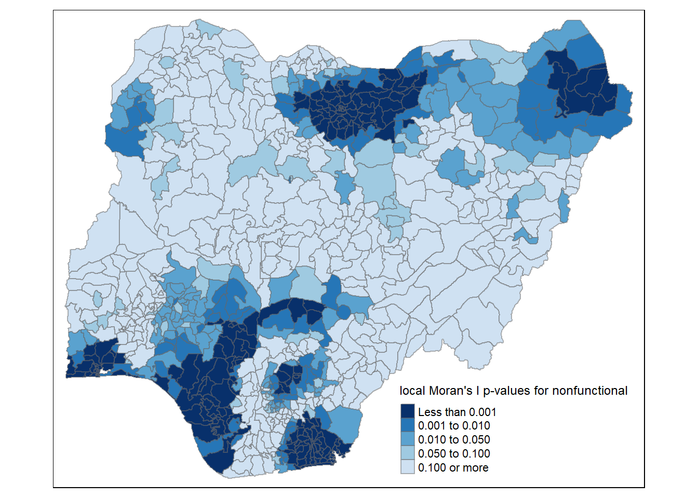

pacman::p_load(sf, tmap, tidyverse, spdep,ggplot2, dplyr)Take-home_Ex1
ISSS624 Take-Home Exercise 1
By Han Shumin
29 November 2022
1 Overview
Geospatial analytics hold tremendous potential to address complex problems facing society. In this study, you are tasked to apply appropriate global and local measures of spatial Association techniques to reveals the spatial patterns of Not Functional water points. For the purpose of this study, Nigeria will be used as the study country.
The specific tasks of this take-home exercise are as follows:
Using appropriate sf method, import the shapefile into R and save it in a simple feature data frame format. Note that there are three Projected Coordinate Systems of Nigeria, they are: EPSG: 26391, 26392, and 26303. You can use any one of them.
Using appropriate tidyr and dplyr methods, derive the proportion of functional and non-functional water point at LGA level.
Combining the geospatial and aspatial data frame into simple feature data frame.
Performing outliers/clusters analysis by using appropriate local measures of spatial association methods.
Performing hotspot areas analysis by using appropriate local measures of spatial association methods.
2 The Dataset
Apstial data
For the purpose of this assignment, data from WPdx Global Data Repositories will be used. There are two versions of the data. They are: WPdx-Basic and WPdx+. You are required to use WPdx+ data set.
Geospatial data
Nigeria Level-2 Administrative Boundary (also known as Local Government Area) polygon features GIS data will be used in this take-home exercise. The data can be downloaded either from The Humanitarian Data Exchange portal or geoBoundaries.
3 Setting Up Working Environment
The code chunk below will install and load tidyverse and sf packages.
4 Geopsatial Data Wrangling
4.1 Loading up the Geospatial Data
nigeria_sf <- st_read(dsn = "data/geospatial",
layer = "geoBoundaries-NGA-ADM2")Reading layer `geoBoundaries-NGA-ADM2' from data source
`C:\Users\Shumin\Documents\Documents Files\Learning\SMU\ISSS624 Applied Geospatial Analytics\shumin86718\ISSS624\Take-home_Ex\Take-home_Ex1\data\geospatial'
using driver `ESRI Shapefile'
Simple feature collection with 774 features and 5 fields
Geometry type: MULTIPOLYGON
Dimension: XY
Bounding box: xmin: 2.668534 ymin: 4.273007 xmax: 14.67882 ymax: 13.89442
Geodetic CRS: WGS 844.2 Import csv file into R environment
nigeria_data <- read_csv("data/aspatial/nigeria.csv")Rows: 95008 Columns: 50
── Column specification ────────────────────────────────────────────────────────
Delimiter: ","
chr (27): #source, #status_id, #water_source_clean, #water_source_category, ...
dbl (19): #lat_deg, #lon_deg, #install_year, #distance_to_primary_road, #dis...
lgl (4): is_urban, latest_record, lat_deg_original, lon_deg_original
ℹ Use `spec()` to retrieve the full column specification for this data.
ℹ Specify the column types or set `show_col_types = FALSE` to quiet this message.nigeria_data[rowSums(is.na(nigeria_data))!=0,]# A tibble: 95,008 × 50
`#source` #lat_…¹ #lon_…² #stat…³ #wate…⁴ #wate…⁵ #wate…⁶ #wate…⁷ #clea…⁸
<chr> <dbl> <dbl> <chr> <chr> <chr> <chr> <chr> <chr>
1 GRID3 5.81 7.92 Unknown <NA> <NA> Tapsta… Tapsta… Nigeria
2 GRID3 7.98 5.12 Unknown <NA> <NA> Tapsta… Tapsta… Nigeria
3 WaterAid 6.78 7.66 Yes Boreho… Well Hand P… Hand P… Nigeria
4 WaterAid 6.96 7.78 Yes Boreho… Well Hand P… Hand P… Nigeria
5 Living Water… 7.37 8.96 Yes Boreho… Well Hand P… Hand P… Nigeria
6 Living Water… 7.16 9.04 Yes Boreho… Well Mechan… Mechan… Nigeria
7 Living Water… 7.32 9.02 Yes Boreho… Well Mechan… Mechan… Nigeria
8 GRID3 5.57 6.96 Unknown Boreho… Well <NA> <NA> Nigeria
9 GRID3 5.99 8.26 Unknown Boreho… Well <NA> <NA> Nigeria
10 GRID3 9.01 3.92 Unknown Boreho… Well <NA> <NA> Nigeria
# … with 94,998 more rows, 41 more variables: `#clean_adm1` <chr>,
# `#clean_adm2` <chr>, `#install_year` <dbl>, `#management_clean` <chr>,
# `#status_clean` <chr>, `#pay` <chr>, `#subjective_quality` <chr>,
# `#country_id` <chr>, `#distance_to_primary_road` <dbl>,
# `#distance_to_secondary_road` <dbl>, `#distance_to_tertiary_road` <dbl>,
# `#distance_to_city` <dbl>, `#distance_to_town` <dbl>, rehab_priority <dbl>,
# water_point_population <dbl>, local_population_1km <dbl>, …nigeria_data$`#status_clean`[is.na(nigeria_data$`#status_clean`)] <- "Unknown"functional <- nigeria_data %>%
filter(`#status_clean` %in% c("Functional", "Functional but not in use" , "Functional but needs repair")) %>%
select(`#lat_deg`, `#lon_deg`, `#water_source_category`, `#clean_adm2`, `#status_clean`)nonfunctional <- nigeria_data %>%
filter(`#status_clean` %in% c("Abandoned/Decommissioned", "Abandoned", "Non functional due to dry season", "Non-Functional", "Non-Functional due to dry season")) %>%
select(`#lat_deg`, `#lon_deg`, `#water_source_category`, `#clean_adm2`, `#status_clean`)unknown <- nigeria_data %>%
filter(`#status_clean` %in% c("Unknown")) %>%
select(`#lat_deg`, `#lon_deg`, `#water_source_category`, `#clean_adm2`, `#status_clean`)st_geometry(nigeria_sf)Geometry set for 774 features
Geometry type: MULTIPOLYGON
Dimension: XY
Bounding box: xmin: 2.668534 ymin: 4.273007 xmax: 14.67882 ymax: 13.89442
Geodetic CRS: WGS 84
First 5 geometries:MULTIPOLYGON (((7.401109 5.081948, 7.400133 5.0...MULTIPOLYGON (((7.334479 5.104902, 7.335673 5.1...MULTIPOLYGON (((13.83477 13.42336, 13.81909 13....MULTIPOLYGON (((7.045872 9.230501, 7.026536 9.2...MULTIPOLYGON (((7.811244 5.094527, 7.812334 5.0...#head(nigeria_sf, n=5) #plot(nigeria_sf)#plot(st_geometry(nigeria_sf))st_crs(nigeria_sf)Coordinate Reference System:
User input: WGS 84
wkt:
GEOGCRS["WGS 84",
ENSEMBLE["World Geodetic System 1984 ensemble",
MEMBER["World Geodetic System 1984 (Transit)"],
MEMBER["World Geodetic System 1984 (G730)"],
MEMBER["World Geodetic System 1984 (G873)"],
MEMBER["World Geodetic System 1984 (G1150)"],
MEMBER["World Geodetic System 1984 (G1674)"],
MEMBER["World Geodetic System 1984 (G1762)"],
MEMBER["World Geodetic System 1984 (G2139)"],
ELLIPSOID["WGS 84",6378137,298.257223563,
LENGTHUNIT["metre",1]],
ENSEMBLEACCURACY[2.0]],
PRIMEM["Greenwich",0,
ANGLEUNIT["degree",0.0174532925199433]],
CS[ellipsoidal,2],
AXIS["geodetic latitude (Lat)",north,
ORDER[1],
ANGLEUNIT["degree",0.0174532925199433]],
AXIS["geodetic longitude (Lon)",east,
ORDER[2],
ANGLEUNIT["degree",0.0174532925199433]],
USAGE[
SCOPE["Horizontal component of 3D system."],
AREA["World."],
BBOX[-90,-180,90,180]],
ID["EPSG",4326]]nigeria_data_sf <- st_as_sf(nigeria_data,
coords = c("#lon_deg", "#lat_deg"),
crs=4326) functional <- st_as_sf(functional,
coords = c("#lon_deg", "#lat_deg"),
crs=4326) nonfunctional <- st_as_sf(nonfunctional,
coords = c("#lon_deg", "#lat_deg"),
crs=4326)unknown <- st_as_sf(unknown,
coords = c("#lon_deg", "#lat_deg"),
crs=4326)nigeria_sf$WaterpointCount <- lengths(st_intersects(nigeria_sf, nigeria_data_sf))nigeria_sf$functional<- lengths(st_intersects(nigeria_sf, functional))nigeria_sf$nonfunctional <- lengths(st_intersects(nigeria_sf, nonfunctional))nigeria_sf$unknown <- lengths(st_intersects(nigeria_sf, unknown))summary(nigeria_sf$WaterpointCount) Min. 1st Qu. Median Mean 3rd Qu. Max.
0.0 45.0 96.0 122.7 168.8 894.0 top_n(nigeria_sf, 1, WaterpointCount)Simple feature collection with 1 feature and 9 fields
Geometry type: MULTIPOLYGON
Dimension: XY
Bounding box: xmin: 8.646937 ymin: 12.41344 xmax: 9.085864 ymax: 12.82021
Geodetic CRS: WGS 84
shapeName Level shapeID shapeGroup shapeType
1 Babura ADM2 NGA-ADM2-72505758B60425686 NGA ADM2
geometry WaterpointCount functional nonfunctional
1 MULTIPOLYGON (((9.037085 12... 894 752 142
unknown
1 0summary(nigeria_sf$functional) Min. 1st Qu. Median Mean 3rd Qu. Max.
0.00 17.00 45.50 67.36 87.75 752.00 summary(nigeria_sf$nonfunctional) Min. 1st Qu. Median Mean 3rd Qu. Max.
0.00 12.25 34.00 41.60 60.75 278.00 top_n(nigeria_sf, 1, functional)Simple feature collection with 1 feature and 9 fields
Geometry type: MULTIPOLYGON
Dimension: XY
Bounding box: xmin: 8.646937 ymin: 12.41344 xmax: 9.085864 ymax: 12.82021
Geodetic CRS: WGS 84
shapeName Level shapeID shapeGroup shapeType
1 Babura ADM2 NGA-ADM2-72505758B60425686 NGA ADM2
geometry WaterpointCount functional nonfunctional
1 MULTIPOLYGON (((9.037085 12... 894 752 142
unknown
1 0top_n(nigeria_sf, 1, nonfunctional)Simple feature collection with 1 feature and 9 fields
Geometry type: MULTIPOLYGON
Dimension: XY
Bounding box: xmin: 4.585744 ymin: 8.209719 xmax: 5.446379 ymax: 9.057664
Geodetic CRS: WGS 84
shapeName Level shapeID shapeGroup shapeType
1 Ifelodun ADM2 NGA-ADM2-72505758B26581542 NGA ADM2
geometry WaterpointCount functional nonfunctional
1 MULTIPOLYGON (((4.664107 8.... 601 320 278
unknown
1 3nigeria_sf <- nigeria_sf %>%
mutate(`functional_ratio` = `functional`/`WaterpointCount`)nigeria_sf <- nigeria_sf %>%
mutate(`nonfunctional_ratio` = `nonfunctional`/`WaterpointCount`)nigeria_sf <- nigeria_sf %>%
mutate(`unknown_ratio` = `unknown`/`WaterpointCount`)#nigeria_sf$`functional_ratio`#nigeria_sf$`nonfunctional_ratio`nigeria_sf26391 <- st_transform(nigeria_sf,
crs = 26391)st_crs(nigeria_sf26391)Coordinate Reference System:
User input: EPSG:26391
wkt:
PROJCRS["Minna / Nigeria West Belt",
BASEGEOGCRS["Minna",
DATUM["Minna",
ELLIPSOID["Clarke 1880 (RGS)",6378249.145,293.465,
LENGTHUNIT["metre",1]]],
PRIMEM["Greenwich",0,
ANGLEUNIT["degree",0.0174532925199433]],
ID["EPSG",4263]],
CONVERSION["Nigeria West Belt",
METHOD["Transverse Mercator",
ID["EPSG",9807]],
PARAMETER["Latitude of natural origin",4,
ANGLEUNIT["degree",0.0174532925199433],
ID["EPSG",8801]],
PARAMETER["Longitude of natural origin",4.5,
ANGLEUNIT["degree",0.0174532925199433],
ID["EPSG",8802]],
PARAMETER["Scale factor at natural origin",0.99975,
SCALEUNIT["unity",1],
ID["EPSG",8805]],
PARAMETER["False easting",230738.26,
LENGTHUNIT["metre",1],
ID["EPSG",8806]],
PARAMETER["False northing",0,
LENGTHUNIT["metre",1],
ID["EPSG",8807]]],
CS[Cartesian,2],
AXIS["(E)",east,
ORDER[1],
LENGTHUNIT["metre",1]],
AXIS["(N)",north,
ORDER[2],
LENGTHUNIT["metre",1]],
USAGE[
SCOPE["Engineering survey, topographic mapping."],
AREA["Nigeria - onshore west of 6°30'E, onshore and offshore shelf."],
BBOX[3.57,2.69,13.9,6.5]],
ID["EPSG",26391]]#tmap_mode("plot")
#qtm(nigeria_sf26391,
# fill = "functional_ratio")tm_shape(nigeria_sf26391)+
tm_fill("functional_ratio",
style = "quantile",
palette = "Blues",
title = "functional waterpoint ratio") +
tm_layout(main.title = "Distribution of Functional Water Point Ratio by L2 LGA",
main.title.position = "center",
main.title.size = 1,
legend.height = 0.45,
legend.width = 0.35,
frame = TRUE) +
tm_borders(alpha = 0.5) +
tm_compass(type="8star", size = 2) +
tm_scale_bar() +
tm_grid(alpha =0.2) +
tm_credits("Source: Level 2 Local Government Area from GeoBoundaries\n and Water Point data from WPdx Global Data Repositories",
position = c("left", "bottom"))
tm_shape(nigeria_sf26391)+
tm_fill("nonfunctional_ratio",
style = "quantile",
palette = "Greens",
title = "nonfunctional waterpoint ratio") +
tm_layout(main.title = "Distribution of nonFunctional Water Point Ratio by L2 LGA",
main.title.position = "center",
main.title.size = 1,
legend.height = 0.45,
legend.width = 0.35,
frame = TRUE) +
tm_borders(alpha = 0.5) +
tm_compass(type="8star", size = 2) +
tm_scale_bar() +
tm_grid(alpha =0.2) +
tm_credits("Source: Level 2 Local Government Area from GeoBoundaries\n and Water Point data from WPdx Global Data Repositories",
position = c("left", "bottom"))
tm_shape(nigeria_sf26391)+
tm_fill("unknown_ratio",
style = "quantile",
palette = "Greens",
title = "unknown waterpoint ratio") +
tm_layout(main.title = "Distribution of unknown Water Point Ratio by L2 LGA",
main.title.position = "center",
main.title.size = 1,
legend.height = 0.45,
legend.width = 0.35,
frame = TRUE) +
tm_borders(alpha = 0.5) +
tm_compass(type="8star", size = 2) +
tm_scale_bar() +
tm_grid(alpha =0.2) +
tm_credits("Source: Level 2 Local Government Area from GeoBoundaries\n and Water Point data from WPdx Global Data Repositories",
position = c("left", "bottom"))
5 Spatial Weights and Applications
5.1 Computing Contiguity Spatial Weights
5.1.1 Computing (QUEEN) contiguity based neighbours
wm_q_nigeria_sf26391 <- poly2nb(nigeria_sf26391, queen=TRUE)
summary(wm_q_nigeria_sf26391)Neighbour list object:
Number of regions: 774
Number of nonzero links: 4440
Percentage nonzero weights: 0.7411414
Average number of links: 5.736434
1 region with no links:
86
Link number distribution:
0 1 2 3 4 5 6 7 8 9 10 11 12 14
1 2 14 57 125 182 140 122 72 41 12 4 1 1
2 least connected regions:
138 560 with 1 link
1 most connected region:
508 with 14 linksstr(wm_q_nigeria_sf26391)List of 774
$ : int [1:4] 2 548 624 721
$ : int [1:3] 1 624 721
$ : int [1:3] 261 447 507
$ : int [1:7] 257 263 436 446 454 466 709
$ : int [1:5] 203 208 331 617 738
$ : int [1:7] 170 217 218 337 379 553 758
$ : int [1:6] 8 176 214 281 349 555
$ : int [1:4] 7 214 544 555
$ : int [1:5] 18 104 337 601 757
$ : int [1:7] 25 216 325 364 365 528 632
$ : int [1:7] 26 27 43 157 191 524 565
$ : int [1:8] 135 263 417 446 520 690 695 709
$ : int [1:5] 31 37 471 583 584
$ : int [1:8] 170 362 363 546 577 581 589 626
$ : int [1:7] 49 82 177 297 306 352 580
$ : int [1:5] 30 187 328 357 360
$ : int [1:3] 35 638 639
$ : int [1:5] 9 19 104 576 601
$ : int [1:6] 18 103 104 376 574 576
$ : int [1:5] 419 466 471 508 641
$ : int [1:5] 61 162 269 520 596
$ : int [1:3] 49 297 326
$ : int [1:5] 54 291 537 618 619
$ : int [1:4] 123 527 673 761
$ : int [1:7] 10 181 216 314 325 366 552
$ : int [1:4] 11 27 191 562
$ : int [1:5] 11 26 562 565 762
$ : int [1:7] 29 173 300 315 316 358 369
$ : int [1:7] 28 173 182 358 378 460 591
$ : int [1:8] 16 38 39 186 192 329 357 360
$ : int [1:6] 13 94 211 471 561 584
$ : int [1:3] 51 62 693
$ : int [1:6] 166 227 238 655 743 750
$ : int [1:7] 42 104 213 330 553 559 757
$ : int [1:7] 17 275 295 378 460 638 639
$ : int [1:8] 50 107 164 247 408 432 455 759
$ : int [1:11] 13 38 40 211 212 320 570 583 584 620 ...
$ : int [1:7] 30 37 39 40 41 192 320
$ : int [1:4] 30 38 186 320
$ : int [1:4] 37 38 41 620
$ : int [1:5] 38 40 192 620 634
$ : int [1:4] 34 136 137 559
$ : int [1:3] 11 157 524
$ : int [1:6] 45 290 303 328 360 634
$ : int [1:3] 44 290 303
$ : int [1:4] 438 521 668 742
$ : int [1:5] 166 234 238 698 750
$ : int [1:4] 113 265 386 701
$ : int [1:7] 15 22 51 297 326 580 623
$ : int [1:8] 36 98 107 409 416 432 681 696
$ : int [1:8] 32 49 62 207 461 580 623 693
$ : int [1:6] 53 78 80 165 602 636
$ : int [1:8] 52 80 199 280 602 621 622 739
$ : int [1:7] 23 79 293 294 532 537 618
$ : int [1:3] 122 430 605
$ : int [1:5] 77 376 533 576 728
$ : int [1:4] 58 199 322 621
$ : int [1:7] 57 322 323 522 523 621 622
$ : int [1:5] 88 128 493 700 714
$ : int [1:7] 61 158 561 578 592 596 626
$ : int [1:5] 21 60 269 596 626
$ : int [1:6] 32 51 207 461 462 693
$ : int [1:6] 90 237 384 416 467 765
$ : int [1:8] 65 74 109 113 131 148 251 407
$ : int [1:5] 64 74 113 265 701
$ : int [1:6] 103 104 288 351 559 574
$ : int [1:7] 304 348 511 594 609 640 694
$ : int [1:2] 157 191
$ : int [1:9] 115 140 146 248 273 274 473 500 512
$ : int [1:5] 71 301 341 343 610
$ : int [1:9] 70 173 298 299 301 343 344 550 625
$ : int [1:8] 73 361 594 607 609 638 639 665
$ : int [1:6] 72 361 374 377 665 666
$ : int [1:6] 64 65 109 683 701 754
$ : int [1:7] 272 398 422 433 485 501 768
$ : int [1:8] 254 287 427 459 547 647 677 751
$ : int [1:6] 56 533 534 579 716 728
$ : int [1:7] 52 79 80 165 215 532 579
$ : int [1:5] 54 78 532 579 618
$ : int [1:5] 52 53 78 215 739
$ : int [1:5] 99 145 233 426 689
$ : int [1:3] 15 352 580
$ : int [1:4] 132 258 383 414
$ : int [1:5] 123 148 437 673 692
$ : int [1:7] 105 156 394 654 675 707 712
$ : int 0
$ : int [1:6] 151 221 226 399 410 486
$ : int [1:6] 59 150 489 648 700 714
$ : int [1:7] 260 408 416 463 674 681 759
$ : int [1:9] 63 163 232 236 237 452 497 710 765
$ : int [1:4] 160 271 406 440
$ : int [1:6] 119 390 392 487 656 668
$ : int [1:6] 123 354 402 607 665 666
$ : int [1:8] 31 158 436 471 520 561 596 709
$ : int [1:6] 391 392 405 469 656 708
$ : int [1:7] 97 139 389 403 420 451 653
$ : int [1:5] 96 389 451 662 773
$ : int [1:5] 50 231 432 696 708
$ : int [1:5] 81 426 689 760 769
[list output truncated]
- attr(*, "class")= chr "nb"
- attr(*, "region.id")= chr [1:774] "1" "2" "3" "4" ...
- attr(*, "call")= language poly2nb(pl = nigeria_sf26391, queen = TRUE)
- attr(*, "type")= chr "queen"
- attr(*, "sym")= logi TRUE5.1.2 Creating (ROOK) contiguity based neighbours
wm_r_nigeria_sf26391 <- poly2nb(nigeria_sf26391, queen=FALSE)
summary(wm_r_nigeria_sf26391)Neighbour list object:
Number of regions: 774
Number of nonzero links: 4420
Percentage nonzero weights: 0.7378029
Average number of links: 5.710594
1 region with no links:
86
Link number distribution:
0 1 2 3 4 5 6 7 8 9 10 11 12 14
1 2 14 59 127 181 141 124 66 42 11 4 1 1
2 least connected regions:
138 560 with 1 link
1 most connected region:
508 with 14 linksstr(wm_r_nigeria_sf26391)List of 774
$ : int [1:4] 2 548 624 721
$ : int [1:3] 1 624 721
$ : int [1:3] 261 447 507
$ : int [1:7] 257 263 436 446 454 466 709
$ : int [1:5] 203 208 331 617 738
$ : int [1:6] 170 217 218 337 379 553
$ : int [1:6] 8 176 214 281 349 555
$ : int [1:4] 7 214 544 555
$ : int [1:5] 18 104 337 601 757
$ : int [1:7] 25 216 325 364 365 528 632
$ : int [1:7] 26 27 43 157 191 524 565
$ : int [1:8] 135 263 417 446 520 690 695 709
$ : int [1:5] 31 37 471 583 584
$ : int [1:8] 170 362 363 546 577 581 589 626
$ : int [1:7] 49 82 177 297 306 352 580
$ : int [1:5] 30 187 328 357 360
$ : int [1:3] 35 638 639
$ : int [1:5] 9 19 104 576 601
$ : int [1:6] 18 103 104 376 574 576
$ : int [1:5] 419 466 471 508 641
$ : int [1:5] 61 162 269 520 596
$ : int [1:3] 49 297 326
$ : int [1:5] 54 291 537 618 619
$ : int [1:4] 123 527 673 761
$ : int [1:7] 10 181 216 314 325 366 552
$ : int [1:4] 11 27 191 562
$ : int [1:5] 11 26 562 565 762
$ : int [1:7] 29 173 300 315 316 358 369
$ : int [1:7] 28 173 182 358 378 460 591
$ : int [1:8] 16 38 39 186 192 329 357 360
$ : int [1:6] 13 94 211 471 561 584
$ : int [1:3] 51 62 693
$ : int [1:6] 166 227 238 655 743 750
$ : int [1:7] 42 104 213 330 553 559 757
$ : int [1:7] 17 275 295 378 460 638 639
$ : int [1:8] 50 107 164 247 408 432 455 759
$ : int [1:11] 13 38 40 211 212 320 570 583 584 620 ...
$ : int [1:7] 30 37 39 40 41 192 320
$ : int [1:4] 30 38 186 320
$ : int [1:4] 37 38 41 620
$ : int [1:5] 38 40 192 620 634
$ : int [1:4] 34 136 137 559
$ : int [1:3] 11 157 524
$ : int [1:6] 45 290 303 328 360 634
$ : int [1:3] 44 290 303
$ : int [1:4] 438 521 668 742
$ : int [1:5] 166 234 238 698 750
$ : int [1:4] 113 265 386 701
$ : int [1:7] 15 22 51 297 326 580 623
$ : int [1:8] 36 98 107 409 416 432 681 696
$ : int [1:7] 32 49 62 207 580 623 693
$ : int [1:6] 53 78 80 165 602 636
$ : int [1:8] 52 80 199 280 602 621 622 739
$ : int [1:7] 23 79 293 294 532 537 618
$ : int [1:3] 122 430 605
$ : int [1:5] 77 376 533 576 728
$ : int [1:4] 58 199 322 621
$ : int [1:7] 57 322 323 522 523 621 622
$ : int [1:5] 88 128 493 700 714
$ : int [1:7] 61 158 561 578 592 596 626
$ : int [1:5] 21 60 269 596 626
$ : int [1:5] 32 51 461 462 693
$ : int [1:6] 90 237 384 416 467 765
$ : int [1:8] 65 74 109 113 131 148 251 407
$ : int [1:5] 64 74 113 265 701
$ : int [1:6] 103 104 288 351 559 574
$ : int [1:7] 304 348 511 594 609 640 694
$ : int [1:2] 157 191
$ : int [1:9] 115 140 146 248 273 274 473 500 512
$ : int [1:5] 71 301 341 343 610
$ : int [1:9] 70 173 298 299 301 343 344 550 625
$ : int [1:8] 73 361 594 607 609 638 639 665
$ : int [1:6] 72 361 374 377 665 666
$ : int [1:6] 64 65 109 683 701 754
$ : int [1:7] 272 398 422 433 485 501 768
$ : int [1:8] 254 287 427 459 547 647 677 751
$ : int [1:6] 56 533 534 579 716 728
$ : int [1:7] 52 79 80 165 215 532 579
$ : int [1:5] 54 78 532 579 618
$ : int [1:5] 52 53 78 215 739
$ : int [1:5] 99 145 233 426 689
$ : int [1:3] 15 352 580
$ : int [1:4] 132 258 383 414
$ : int [1:5] 123 148 437 673 692
$ : int [1:7] 105 156 394 654 675 707 712
$ : int 0
$ : int [1:6] 151 221 226 399 410 486
$ : int [1:6] 59 150 489 648 700 714
$ : int [1:7] 260 408 416 463 674 681 759
$ : int [1:9] 63 163 232 236 237 452 497 710 765
$ : int [1:4] 160 271 406 440
$ : int [1:6] 119 390 392 487 656 668
$ : int [1:6] 123 354 402 607 665 666
$ : int [1:8] 31 158 436 471 520 561 596 709
$ : int [1:6] 391 392 405 469 656 708
$ : int [1:7] 97 139 389 403 420 451 653
$ : int [1:5] 96 389 451 662 773
$ : int [1:5] 50 231 432 696 708
$ : int [1:5] 81 426 689 760 769
[list output truncated]
- attr(*, "class")= chr "nb"
- attr(*, "region.id")= chr [1:774] "1" "2" "3" "4" ...
- attr(*, "call")= language poly2nb(pl = nigeria_sf26391, queen = FALSE)
- attr(*, "type")= chr "rook"
- attr(*, "sym")= logi TRUElongitude <- map_dbl(nigeria_sf26391$geometry, ~st_centroid(.x)[[1]])latitude<- map_dbl(nigeria_sf26391$geometry, ~st_centroid(.x)[[2]])coords <- cbind(longitude, latitude)head(coords) longitude latitude
[1,] 549364.0 123694.9
[2,] 547123.4 120376.5
[3,] 1189496.9 1059770.9
[4,] 489057.4 534262.6
[5,] 593718.2 113824.1
[6,] 642618.7 251222.35.1.3 Plotting Queen contiguity against ROOK contiguity based neighbours maps
plot(nigeria_sf26391$geometry, border="lightgrey")
plot(wm_q_nigeria_sf26391, coords, pch = 19, cex = 0.4, add = TRUE, col= "red")
plot(nigeria_sf26391$geometry, border="lightgrey")
plot(wm_r_nigeria_sf26391, coords, pch = 19, cex = 0.4, add = TRUE, col = "red")6 Global Spatial Autocorrelation
6.1 Row-standardized weights matrix
nigeria_sf26391$`functional_ratio`[is.na(nigeria_sf26391$`functional_ratio`)] <- 0nigeria_sf26391$`nonfunctional_ratio`[is.na(nigeria_sf26391$`nonfunctional_ratio`)] <- 0rswm_q <- nb2listw(wm_q_nigeria_sf26391, style="W", zero.policy = TRUE)
print(rswm_q,zero.policy = TRUE)Characteristics of weights list object:
Neighbour list object:
Number of regions: 774
Number of nonzero links: 4440
Percentage nonzero weights: 0.7411414
Average number of links: 5.736434
1 region with no links:
86
Weights style: W
Weights constants summary:
n nn S0 S1 S2
W 773 597529 773 285.0658 3198.4146.2 Global Spatial Autocorrelation: Moran’s I
6.2.1 Moron’s I test for nonfunctional waterpoint count
moran.test(nigeria_sf26391$`nonfunctional_ratio`,
listw=rswm_q,
zero.policy = TRUE,
na.action=na.omit)
Moran I test under randomisation
data: nigeria_sf26391$nonfunctional_ratio
weights: rswm_q n reduced by no-neighbour observations
Moran I statistic standard deviate = 22.343, p-value < 2.2e-16
alternative hypothesis: greater
sample estimates:
Moran I statistic Expectation Variance
0.4850220148 -0.0012953368 0.0004737605 Computing Monte Carlo Moran’s I
set.seed(1234)
bperm_fun= moran.mc(nigeria_sf26391$`nonfunctional_ratio`,
listw=rswm_q,
nsim=999,
zero.policy = TRUE,
na.action=na.omit)
bperm_fun
Monte-Carlo simulation of Moran I
data: nigeria_sf26391$nonfunctional_ratio
weights: rswm_q
number of simulations + 1: 1000
statistic = 0.48502, observed rank = 1000, p-value = 0.001
alternative hypothesis: greaterVisualising Monte Carlo Moran’s I
mean(bperm_fun$res[1:999])[1] -0.0017128var(bperm_fun$res[1:999])[1] 0.0004496655summary(bperm_fun$res[1:999]) Min. 1st Qu. Median Mean 3rd Qu. Max.
-0.062191 -0.016560 -0.001624 -0.001713 0.013141 0.058463 hist(bperm_fun$res,
freq=TRUE,
breaks=50,
xlab="Simulated Moran's I")
abline(v=0,
col="red") 
6.3 Global Spatial Autocorrelation: Geary’s
geary.test(nigeria_sf26391$`nonfunctional_ratio`,
listw=rswm_q, zero.policy = TRUE)
Geary C test under randomisation
data: nigeria_sf26391$nonfunctional_ratio
weights: rswm_q
Geary C statistic standard deviate = 21.268, p-value < 2.2e-16
alternative hypothesis: Expectation greater than statistic
sample estimates:
Geary C statistic Expectation Variance
0.5051702703 1.0000000000 0.0005413473 Computing Monte Carlo Geary’s C
set.seed(1234)
bperm_fun=geary.mc(nigeria_sf26391$`nonfunctional_ratio`,
listw=rswm_q,
nsim=999,
zero.policy = TRUE)
bperm_fun
Monte-Carlo simulation of Geary C
data: nigeria_sf26391$nonfunctional_ratio
weights: rswm_q
number of simulations + 1: 1000
statistic = 0.50517, observed rank = 1, p-value = 0.001
alternative hypothesis: greaterVisualising the Monte Carlo Geary’s C
mean(bperm_fun$res[1:999])[1] 0.9989763var(bperm_fun$res[1:999])[1] 0.0005187001summary(bperm_fun$res[1:999]) Min. 1st Qu. Median Mean 3rd Qu. Max.
0.9274 0.9836 0.9995 0.9990 1.0139 1.0764 hist(bperm_fun$res, freq=TRUE, breaks=50, xlab="Simulated Geary c")
abline(v=1, col="red") 
6.4 Spatial Correlogram
6.4.1 Compute Moran’s I correlogram
MI_corr <- sp.correlogram(wm_q_nigeria_sf26391,
nigeria_sf26391$`nonfunctional_ratio`,
order=6,
method="I",
style="W",
zero.policy = TRUE)
plot(MI_corr)
print(MI_corr)Spatial correlogram for nigeria_sf26391$nonfunctional_ratio
method: Moran's I
estimate expectation variance standard deviate Pr(I) two sided
1 (773) 4.8502e-01 -1.2953e-03 4.7376e-04 22.3429 < 2.2e-16
2 (773) 3.8518e-01 -1.2953e-03 2.0302e-04 27.1243 < 2.2e-16
3 (773) 2.8566e-01 -1.2953e-03 1.2247e-04 25.9301 < 2.2e-16
4 (773) 1.7345e-01 -1.2953e-03 8.8006e-05 18.6269 < 2.2e-16
5 (773) 8.8675e-02 -1.2953e-03 6.9106e-05 10.8228 < 2.2e-16
6 (773) 5.1676e-02 -1.2953e-03 5.7653e-05 6.9764 3.027e-12
1 (773) ***
2 (773) ***
3 (773) ***
4 (773) ***
5 (773) ***
6 (773) ***
---
Signif. codes: 0 '***' 0.001 '**' 0.01 '*' 0.05 '.' 0.1 ' ' 16.4.2 Compute Geary’s C correlogram and plot
GC_corr <- sp.correlogram(wm_q_nigeria_sf26391,
nigeria_sf26391$`nonfunctional_ratio`,
order=6,
method="C",
style="W",
zero.policy = TRUE)
plot(GC_corr)
print(GC_corr)Spatial correlogram for nigeria_sf26391$nonfunctional_ratio
method: Geary's C
estimate expectation variance standard deviate Pr(I) two sided
1 (773) 0.50517027 1.00000000 0.00054135 -21.2676 < 2.2e-16 ***
2 (773) 0.60046790 1.00000000 0.00025747 -24.8994 < 2.2e-16 ***
3 (773) 0.69915537 1.00000000 0.00016747 -23.2477 < 2.2e-16 ***
4 (773) 0.80738030 1.00000000 0.00013480 -16.5905 < 2.2e-16 ***
5 (773) 0.89516589 1.00000000 0.00012046 -9.5518 < 2.2e-16 ***
6 (773) 0.93788991 1.00000000 0.00011900 -5.6937 1.243e-08 ***
---
Signif. codes: 0 '***' 0.001 '**' 0.01 '*' 0.05 '.' 0.1 ' ' 17 Cluster and Outlier Analysis
7.1 Computing local Moran’s I
fips <- order(nigeria_sf26391$shapeName)localMI <- localmoran(nigeria_sf26391$`nonfunctional_ratio`, rswm_q, zero.policy = TRUE)
head(localMI) Ii E.Ii Var.Ii Z.Ii Pr(z != E(Ii))
1 0.7104808 -0.0008481017 0.1633313 1.7600935 0.078391961
2 0.4787122 -0.0005236472 0.1346804 1.3058614 0.191599708
3 2.9220515 -0.0037801442 0.9690735 2.9721518 0.002957204
4 0.2666687 -0.0016485516 0.1805678 0.6314347 0.527756347
5 1.1001242 -0.0007647464 0.1176793 3.2091756 0.001331162
6 0.5273909 -0.0009383859 0.1028556 1.6473678 0.099482464df = data.frame(localMI[fips,])
rownames(df) = make.names(nigeria_sf26391$shapeName, unique=TRUE)
printCoefmat(df, check.names=FALSE) Ii E.Ii Var.Ii Z.Ii
Aba.North 7.1048e-01 -8.4810e-04 1.6333e-01 1.7601e+00
Aba.South 4.7871e-01 -5.2365e-04 1.3468e-01 1.3059e+00
Abadam 2.9221e+00 -3.7801e-03 9.6907e-01 2.9722e+00
Abaji 2.6667e-01 -1.6486e-03 1.8057e-01 6.3143e-01
Abak 1.1001e+00 -7.6475e-04 1.1768e-01 3.2092e+00
Abakaliki 5.2739e-01 -9.3839e-04 1.0286e-01 1.6474e+00
Abeokuta.North -2.0155e-01 -1.9660e-04 2.5192e-02 -1.2686e+00
Abeokuta.South 1.2084e-01 -1.9665e-04 3.7896e-02 6.2178e-01
Abi -4.0565e-02 -6.9312e-05 1.0673e-02 -3.9198e-01
Aboh.Mbaise 9.1734e-03 -3.5249e-05 3.8671e-03 1.4808e-01
Abua.Odual 1.3806e-03 -1.9671e-05 2.1581e-03 3.0143e-02
Abuja.Municipal 1.0191e-01 -9.6479e-04 9.2408e-02 3.3842e-01
Adavi 7.4353e-01 -1.1287e-03 1.7363e-01 1.7871e+00
Ado -1.9818e-02 -1.7819e-04 1.7081e-02 -1.5028e-01
Ado.Odo.Ota -1.0713e-01 -1.0647e-04 1.1680e-02 -9.9033e-01
Ado.Ekiti -3.7915e-02 -1.5482e-04 2.3839e-02 -2.4456e-01
Afijio 1.6042e-02 -3.0426e-06 7.8297e-04 5.7342e-01
Afikpo.North 9.5682e-03 -8.7733e-05 1.3510e-02 8.3075e-02
Afikpo.South 5.0871e-02 -5.8026e-04 7.4325e-02 1.8872e-01
Agaie -6.6202e-02 -5.3678e-04 8.2618e-02 -2.2845e-01
Agatu 1.9248e+00 -2.7681e-03 4.2510e-01 2.9564e+00
Agege 1.0894e+00 -2.5073e-03 6.4360e-01 1.3610e+00
Aguata 7.6625e-01 -1.1875e-03 1.8266e-01 1.7957e+00
Agwara 1.6960e-01 -9.4099e-05 1.8136e-02 1.2601e+00
Ahiazu.Mbaise 7.4044e-02 -1.3313e-04 1.4604e-02 6.1381e-01
Ahoada.East -5.4543e-01 -8.1752e-04 1.5745e-01 -1.3725e+00
Ahoada.West -4.6771e-01 -3.7801e-03 5.7993e-01 -6.0920e-01
Aiyedade -4.4750e-03 -3.6195e-05 3.9709e-03 -7.0440e-02
Aiyedire 3.9482e-02 -3.2938e-05 3.6136e-03 6.5735e-01
Aiyekire..Gbonyin. 9.9201e-03 -3.1751e-06 3.0440e-04 5.6876e-01
Ajaokuta 8.9227e-01 -1.6977e-03 2.1721e-01 1.9181e+00
Ajeromi.Ifelodun 1.3779e+00 -1.6072e-03 4.1292e-01 2.1467e+00
Ajingi 1.0218e+00 -9.0811e-04 1.1628e-01 2.9992e+00
Akamkpa 4.4244e-02 -8.2188e-06 9.0170e-04 1.4737e+00
Akinyele 3.3688e-02 -9.9884e-06 1.0958e-03 1.0180e+00
Akko 7.5012e-01 -1.3593e-03 1.3014e-01 2.0831e+00
Akoko.Edo 7.4851e-01 -8.7671e-04 6.0836e-02 3.0383e+00
Akoko.North.East 5.3052e-01 -8.4037e-04 9.2121e-02 1.7507e+00
Akoko.North.West -9.1353e-03 -1.6107e-03 3.0995e-01 -1.3516e-02
Akoko.South.East 1.5725e+00 -3.0038e-03 5.7723e-01 2.0737e+00
Akoko.South.West 7.4897e-01 -9.9569e-04 1.5318e-01 1.9162e+00
Akpabuyo 4.3627e-01 -8.2761e-04 1.5939e-01 1.0948e+00
Akuku.Toru -7.4085e-02 -1.5838e-04 4.0750e-02 -3.6622e-01
Akure.North 1.6263e-01 -1.3567e-03 1.7364e-01 3.9352e-01
Akure.South -1.0666e+00 -1.4949e-03 3.8411e-01 -1.7185e+00
Akwanga -2.3639e-01 -4.2431e-04 8.1750e-02 -8.2527e-01
Albasu 3.0822e-01 -9.8120e-05 1.5109e-02 2.5083e+00
Aleiro 7.6914e-02 -1.4076e-04 2.7127e-02 4.6785e-01
Alimosho 4.7725e-01 -5.2546e-04 5.7619e-02 1.9904e+00
Alkaleri -3.6657e-02 -1.3378e-04 1.2824e-02 -3.2252e-01
Amuwo.Odofin 7.9332e-01 -7.4280e-04 7.1161e-02 2.9767e+00
Anambra.East 2.1574e-01 -4.7513e-04 6.0866e-02 8.7638e-01
Anambra.West -2.9204e-02 -5.7829e-05 5.5439e-03 -3.9145e-01
Anaocha 7.3091e-01 -8.2145e-04 9.0049e-02 2.4384e+00
Andoni -4.3655e-01 -2.4262e-03 6.2283e-01 -5.5008e-01
Aninri 8.2526e-01 -3.7801e-03 5.7993e-01 1.0886e+00
Aniocha.North -7.0709e-01 -6.5831e-03 1.2605e+00 -6.2393e-01
Aniocha.South -1.4809e-01 -7.7855e-05 8.5409e-03 -1.6016e+00
Anka 8.7867e-02 -4.1651e-04 6.4115e-02 3.4866e-01
Ankpa 2.7506e+00 -4.6866e-03 5.1177e-01 3.8515e+00
Apa 2.2225e+00 -1.9216e-03 2.9535e-01 4.0930e+00
Apapa 1.8806e+00 -3.7801e-03 4.8265e-01 2.7123e+00
Ardo.Kola -1.2718e-02 -5.0964e-05 6.5315e-03 -1.5674e-01
Arewa.Dandi 2.8243e-03 -1.6529e-08 1.5847e-06 2.2436e+00
Argungu 7.6334e-02 -3.0647e-04 4.7181e-02 3.5284e-01
Arochukwu -2.3885e-01 -1.8395e-04 2.3572e-02 -1.5545e+00
Asa -3.8317e-02 -9.3275e-05 1.0232e-02 -3.7787e-01
Asari.Toru 3.2181e-01 -1.2955e-03 5.0007e-01 4.5690e-01
Askira.Uba 4.4476e-01 -7.9553e-04 6.7653e-02 1.7130e+00
Atakumosa.East 1.1495e-01 -8.3232e-05 1.2816e-02 1.0161e+00
Atakumosa.West 9.6189e-02 -1.0352e-04 8.8096e-03 1.0259e+00
Atiba 1.5449e-01 -2.9478e-04 2.8253e-02 9.2088e-01
Atigbo -2.4407e-01 -2.7055e-04 3.4665e-02 -1.3094e+00
Augie 2.3962e-01 -2.2947e-04 2.9403e-02 1.3988e+00
Auyo 1.3500e+00 -1.9577e-03 2.1436e-01 2.9201e+00
Awe 9.8490e-02 -1.4706e-04 1.4097e-02 8.3075e-01
Awgu 1.8010e-01 -7.7855e-05 9.9774e-03 1.8039e+00
Awka.North 2.3937e-01 -3.7801e-03 4.1316e-01 3.7829e-01
Awka.South 3.9680e-01 -5.2788e-04 8.1250e-02 1.3939e+00
Ayamelum -9.9360e-01 -1.3730e-03 2.1115e-01 -2.1593e+00
Babura 3.9697e-01 -1.1764e-03 1.8095e-01 9.3597e-01
Badagry 9.7761e-02 -4.3383e-04 1.1159e-01 2.9395e-01
Bade 8.0832e-01 -7.7864e-04 1.4997e-01 2.0893e+00
Bagudo -1.7151e-01 -2.4891e-05 3.8331e-03 -2.7698e+00
Bagwai 8.3615e-01 -1.0332e-03 1.1324e-01 2.4878e+00
Bakassi 0.0000e+00 0.0000e+00 0.0000e+00 NaN
Bakori 6.9808e-01 -2.2337e-03 2.8564e-01 1.3103e+00
Bakura 1.7476e-01 -2.1274e-03 2.7208e-01 3.3913e-01
Balanga -9.2064e-02 -1.9820e-04 2.1741e-02 -6.2304e-01
Bali 3.3571e-02 -1.1950e-04 1.0170e-02 3.3409e-01
Bama 2.9221e+00 -3.7801e-03 7.2586e-01 3.4342e+00
Barikin.Ladi 2.0994e-03 -3.4270e-06 4.3921e-04 1.0034e-01
Baruten 2.8872e-02 -1.4726e-04 1.8870e-02 2.1125e-01
Bassa 1.0837e+00 -1.5233e-03 1.4582e-01 2.8419e+00
Bassa.1 2.1007e-01 -3.4159e-04 4.3765e-02 1.0058e+00
Batagarawa -1.9967e-02 -2.6474e-05 2.9044e-03 -3.7000e-01
Batsari 4.0673e-02 -3.4356e-05 5.2906e-03 5.5965e-01
Bauchi 3.8567e-01 -6.8383e-04 1.0524e-01 1.1910e+00
Baure -1.0961e-01 -2.2892e-05 3.5253e-03 -1.8457e+00
Bayo 1.3919e-01 -1.3378e-04 2.0599e-02 9.7078e-01
Bebeji 5.6777e-01 -1.8232e-03 2.8026e-01 1.0759e+00
Bekwara -6.3674e-02 -1.4381e-04 2.2143e-02 -4.2694e-01
Bende -9.6268e-02 -3.4958e-04 3.3504e-02 -5.2403e-01
Biase 1.2532e-01 -2.0421e-04 1.9574e-02 8.9722e-01
Bichi 2.7681e-01 -7.7855e-05 9.9774e-03 2.7720e+00
Bida -2.6337e-01 -1.6143e-03 6.2293e-01 -3.3164e-01
Billiri 1.4430e-01 -8.9847e-04 1.7302e-01 3.4908e-01
Bindawa 4.4692e-01 -7.8468e-04 1.0049e-01 1.4123e+00
Binji 5.9725e-01 -2.1292e-03 2.7230e-01 1.1486e+00
Biriniwa 1.0800e+00 -1.0622e-03 1.3599e-01 2.9315e+00
Birni.Kudu 1.1793e+00 -1.8649e-03 1.7846e-01 2.7959e+00
Birnin.Gwari 1.0523e+00 -3.4129e-03 2.6018e-01 2.0698e+00
Birnin.Kebbi -6.1373e-01 -1.4949e-03 1.9131e-01 -1.3998e+00
Birnin.Magaji 3.8265e-01 -5.9689e-04 7.6454e-02 1.3861e+00
Biu 1.2705e+00 -3.7801e-03 3.6104e-01 2.1208e+00
Bodinga 3.3513e-01 -4.2419e-04 6.5297e-02 1.3131e+00
Bogoro 5.1520e-01 -6.5526e-04 1.6851e-01 1.2566e+00
Boki -1.7271e-03 -8.5335e-08 1.3141e-05 -4.7639e-01
Bokkos -3.6040e-02 -3.4958e-04 4.4789e-02 -1.6864e-01
Boluwaduro 4.6738e-02 -3.8171e-05 7.3571e-03 5.4535e-01
Bomadi 2.8292e+00 -4.4722e-03 6.8563e-01 3.4223e+00
Bonny 3.4281e-01 -3.7801e-03 4.8265e-01 4.9888e-01
Borgu -2.8043e-01 -4.7814e-04 4.0675e-02 -1.3881e+00
Boripe 1.8050e-01 -4.2867e-04 5.4917e-02 7.7207e-01
Bosso -1.6959e-01 -5.8400e-04 7.4804e-02 -6.1795e-01
Brass 2.8480e+00 -3.9671e-03 1.5272e+00 2.3078e+00
Buji 8.0392e-01 -1.6124e-03 2.4791e-01 1.6178e+00
Bukkuyum -1.1565e-02 -1.9441e-04 2.9933e-02 -6.5722e-02
Bungudu 9.8178e-02 -5.9215e-05 7.5888e-03 1.1277e+00
Bunkure 3.2673e-01 -4.4333e-04 4.8617e-02 1.4838e+00
Bunza 1.2468e+00 -1.3848e-03 2.1296e-01 2.7048e+00
Bursari 9.0054e-01 -8.8354e-04 8.4633e-02 3.0986e+00
Buruku 2.0770e-02 -4.3366e-05 5.5578e-03 2.7918e-01
Burutu 6.3132e-01 -1.4076e-04 2.7127e-02 3.8340e+00
Bwari 2.1399e-01 -5.1249e-04 9.8731e-02 6.8266e-01
Calabar.Municipal -2.0755e-01 -5.2100e-05 1.3406e-02 -1.7920e+00
Calabar.South 5.9487e-01 -2.6060e-03 5.0100e-01 8.4411e-01
Chanchaga -6.2759e-01 -1.1287e-03 8.7265e-01 -6.7062e-01
Charanchi 1.5392e-01 -3.5775e-04 4.5835e-02 7.2064e-01
Chibok 7.7879e-01 -3.9975e-04 1.0283e-01 2.4299e+00
Chikun 1.0655e+00 -1.2025e-02 1.1390e+00 1.0096e+00
Dala -1.2266e-01 -1.8028e-05 3.4748e-03 -2.0805e+00
Damaturu 1.4926e+00 -2.3346e-03 3.5869e-01 2.4961e+00
Damban -2.2847e-01 -2.0163e-03 2.5790e-01 -4.4591e-01
Dambatta 2.3295e-02 -6.1144e-07 9.4161e-05 2.4007e+00
Damboa 2.4779e+00 -3.7801e-03 3.6104e-01 4.1301e+00
Dan.Musa 8.2153e-01 -1.8288e-03 2.0027e-01 1.8398e+00
Dandi 1.1931e+00 -3.4616e-03 6.6492e-01 1.4674e+00
Dandume 2.7987e-02 -6.2985e-06 1.2140e-03 8.0341e-01
Dange.Shuni -1.7603e-02 -2.7000e-05 2.9622e-03 -3.2294e-01
Danja -4.5872e-02 -2.1259e-04 2.7241e-02 -2.7664e-01
Darazo 1.1172e-01 -5.8026e-04 6.3624e-02 4.4520e-01
Dass 1.1122e+00 -2.3903e-03 9.2163e-01 1.1610e+00
Daura 2.8260e-01 -4.4121e-03 1.1304e+00 2.6996e-01
Dawakin.Kudu 1.7281e-01 -1.0781e-04 1.3816e-02 1.4711e+00
Dawakin.Tofa 1.7771e+00 -2.6945e-03 3.4441e-01 3.0327e+00
Degema 3.7854e-01 -3.4958e-04 3.3504e-02 2.0700e+00
Dekina 2.6563e+00 -3.0642e-03 5.8881e-01 3.4657e+00
Demsa 1.9157e-01 -4.8349e-04 5.3019e-02 8.3410e-01
Dikwa 2.9221e+00 -3.7801e-03 4.8265e-01 4.2115e+00
Doguwa -1.3474e-01 -7.2763e-05 9.3250e-03 -1.3946e+00
Doma 1.1473e-01 -2.1534e-05 1.8327e-03 2.6804e+00
Donga 7.7116e-02 -2.3409e-04 2.2438e-02 5.1638e-01
Dukku 1.4433e+00 -7.1389e-03 7.7763e-01 1.6448e+00
Dunukofia 1.2670e-02 -3.9951e-07 6.1524e-05 1.6154e+00
Dutse 1.6800e+00 -3.5118e-03 3.3550e-01 2.9064e+00
Dutsi -2.5258e-02 -1.3854e-05 1.5200e-03 -6.4750e-01
Dutsin.Ma 4.4227e-01 -5.9410e-04 7.6098e-02 1.6054e+00
Eastern.Obolo 2.3066e+00 -6.7695e-03 1.0354e+00 2.2735e+00
Ebonyi 8.2166e-01 -1.2357e-03 1.5818e-01 2.0690e+00
Edati 1.6097e-02 -2.2456e-04 8.6771e-02 5.5407e-02
Ede.North 1.1448e-01 -4.7814e-04 1.2298e-01 3.2782e-01
Ede.South -3.1977e-02 -2.4859e-04 2.1152e-02 -2.1816e-01
Edu 3.4713e-01 -6.4646e-04 9.9490e-02 1.1026e+00
Efon 1.6921e-01 -6.7549e-04 1.3011e-01 4.7099e-01
Egbado.North -7.7998e-02 -1.6990e-05 2.6164e-03 -1.5245e+00
Egbado.South 3.9709e-01 -2.5793e-03 3.9618e-01 6.3497e-01
Egbeda -1.3147e-02 -2.2340e-06 3.4403e-04 -7.0871e-01
Egbedore -1.3817e-02 -7.6400e-05 7.3241e-03 -1.6056e-01
Egor 3.8061e-01 -7.4965e-04 1.9276e-01 8.6860e-01
Ehime.Mbano 2.7616e-01 -4.9586e-04 7.6323e-02 1.0014e+00
Ejigbo 7.6811e-02 -2.1455e-04 2.3534e-02 5.0210e-01
Ekeremor 3.6037e+00 -7.9060e-03 1.5118e+00 2.9373e+00
Eket 5.7575e-01 -2.7351e-04 5.2704e-02 2.5091e+00
Ekiti 8.4378e-01 -1.6837e-03 2.1543e-01 1.8215e+00
Ekiti.East -1.0463e+00 -2.9027e-03 4.4571e-01 -1.5628e+00
Ekiti.South.West 2.3209e-01 -4.3762e-04 4.7991e-02 1.0614e+00
Ekiti.West -1.1483e-02 -2.2793e-06 2.1852e-04 -7.7661e-01
Ekwusigo 1.1564e+00 -2.2298e-03 3.4262e-01 1.9794e+00
Eleme 1.1154e+00 -3.7801e-03 4.8265e-01 1.6110e+00
Emohua 5.3008e-02 -1.9671e-05 1.8859e-03 1.2211e+00
Emure -6.0284e-02 -1.9851e-04 3.0565e-02 -3.4368e-01
Enugu.East 5.2596e-01 -1.0061e-03 1.5478e-01 1.3395e+00
Enugu.North 1.4384e+00 -2.9541e-03 4.5359e-01 2.1402e+00
Enugu.South 1.1227e+00 -2.7537e-03 7.0665e-01 1.3388e+00
Epe -1.0862e-01 -7.7320e-05 7.4123e-03 -1.2607e+00
Esan.Central 1.2244e+00 -2.0686e-03 3.9789e-01 1.9444e+00
Esan.North.East 1.3278e+00 -1.5358e-03 2.3615e-01 2.7355e+00
Esan.South.East 1.3009e+00 -3.6920e-03 3.1306e-01 2.3317e+00
Esan.West 8.2212e-01 -8.4810e-04 1.0860e-01 2.4972e+00
Ese.Odo 1.6062e+00 -2.3027e-03 3.5380e-01 2.7043e+00
Esit...Eket 2.3846e+00 -4.4722e-03 5.7061e-01 3.1627e+00
Essien.Udim 2.1749e+00 -2.8725e-03 3.1425e-01 3.8849e+00
Etche -2.7135e-01 -3.8356e-04 4.2066e-02 -1.3212e+00
Ethiope.East 1.1113e+00 -2.2492e-03 4.3256e-01 1.6932e+00
Ethiope.West 1.8342e+00 -3.0134e-03 4.6266e-01 2.7010e+00
Eti.Osa 8.9467e-01 -3.7801e-03 5.7993e-01 1.1798e+00
Etim.Ekpo 2.3810e+00 -2.4262e-03 3.1020e-01 4.2793e+00
Etinan 2.0481e+00 -4.9761e-03 7.6250e-01 2.3512e+00
Etsako.Central 1.3102e+00 -1.7569e-03 2.7009e-01 2.5244e+00
Etsako.East 9.5134e-01 -1.0393e-03 8.8362e-02 3.2039e+00
Etsako.West -1.1503e-01 -1.9671e-05 2.1581e-03 -2.4756e+00
Etung 9.4604e-02 -6.5764e-04 1.6912e-01 2.3164e-01
Ewekoro 4.3386e-01 -9.3526e-04 1.1976e-01 1.2564e+00
Ezeagu 5.4909e-01 -7.7983e-04 1.2000e-01 1.5873e+00
Ezinihitte -3.0053e-02 -1.1673e-05 1.7976e-03 -7.0857e-01
Ezza.North 5.0244e-01 -7.6344e-04 9.7771e-02 1.6093e+00
Ezza.South 5.3312e-01 -8.2831e-04 1.2745e-01 1.4956e+00
Fagge 6.9386e-01 -2.5620e-03 3.9354e-01 1.1101e+00
Fakai -5.1400e-01 -9.2209e-04 1.0107e-01 -1.6139e+00
Faskari -1.7603e-02 -4.9701e-04 4.7626e-02 -7.8382e-02
Fika -4.7735e-02 -6.4784e-04 5.5102e-02 -2.0059e-01
Fufore 4.3357e-01 -3.7801e-03 4.8265e-01 6.2953e-01
Funakaye 9.7216e-01 -1.4823e-03 2.2793e-01 2.0394e+00
Fune 4.6535e-01 -2.4599e-04 2.3578e-02 3.0322e+00
Funtua 6.9002e-02 -3.9679e-04 6.1081e-02 2.8080e-01
Gabasawa 1.4210e+00 -3.2500e-03 4.1518e-01 2.2105e+00
Gada -1.6103e-02 -3.2218e-07 6.2100e-05 -2.0434e+00
Gagarawa 1.1052e+00 -2.3806e-03 3.0438e-01 2.0076e+00
Gamawa 4.3937e-02 -2.2022e-05 2.8224e-03 8.2744e-01
Ganjuwa 1.5168e-01 -1.4624e-03 1.4000e-01 4.0928e-01
Ganye 3.1356e-03 -1.2990e-07 2.5038e-05 6.2667e-01
Garki 8.8292e-01 -7.3420e-04 7.0338e-02 3.3318e+00
Garko 4.6706e-01 -1.6265e-03 1.7816e-01 1.1104e+00
Garum.Mallam 3.2873e-01 -2.6682e-04 4.1079e-02 1.6232e+00
Gashaka 7.2154e-03 -3.5249e-05 6.7939e-03 8.7966e-02
Gassol 3.7619e-03 -3.2292e-05 4.1386e-03 5.8978e-02
Gaya 1.3281e+00 -3.4617e-03 6.6493e-01 1.6330e+00
Gbako -6.6000e-02 -1.1851e-04 1.8248e-02 -4.8771e-01
Gboko 6.3051e-03 -4.1375e-06 6.3716e-04 2.4995e-01
Geidam 2.1810e+00 -3.7801e-03 4.8265e-01 3.1447e+00
Gezawa 1.4122e-01 -3.4179e-05 5.2634e-03 1.9470e+00
Giade 1.8010e-01 -1.3679e-04 2.6363e-02 1.1101e+00
Girei 6.7684e-01 -1.4949e-03 2.2987e-01 1.4148e+00
Giwa 6.7092e-01 -9.0352e-04 7.6828e-02 2.4238e+00
Gokana -2.7733e-01 -5.8026e-04 1.1178e-01 -8.2777e-01
Gombe 1.1414e+00 -1.1471e-03 4.4283e-01 1.7170e+00
Gombi 1.3297e-02 -3.9951e-07 5.1203e-05 1.8583e+00
Goronyo -1.0035e-01 -2.3559e-03 3.0123e-01 -1.7855e-01
Gubio 2.5606e+00 -3.7801e-03 5.7993e-01 3.3673e+00
Gudu 8.9840e-01 -1.3634e-03 3.5037e-01 1.5201e+00
Gujba 1.6961e+00 -3.7801e-03 4.1316e-01 2.6446e+00
Gulani -1.2152e-01 -5.8026e-04 6.3624e-02 -4.7948e-01
Guma 2.2477e-01 -7.6981e-04 6.5467e-02 8.8150e-01
Gumel -9.0867e-02 -1.0957e-05 2.8195e-03 -1.7111e+00
Gummi -3.7968e-02 -6.1482e-05 6.7450e-03 -4.6155e-01
Gurara -7.3498e-02 -1.8169e-04 1.9930e-02 -5.1933e-01
Guri 1.3940e+00 -2.7043e-03 2.9589e-01 2.5677e+00
Gusau 2.6351e-02 -7.0358e-06 6.7454e-04 1.0149e+00
Guyuk -4.3901e-01 -5.8026e-04 1.1178e-01 -1.3114e+00
Guzamala 2.9221e+00 -3.7801e-03 4.8265e-01 4.2115e+00
Gwadabawa 2.6569e-01 -2.2744e-04 2.9143e-02 1.5577e+00
Gwagwalada 1.3283e-01 -1.5589e-04 1.9977e-02 9.4091e-01
Gwale 5.5269e-01 -8.8439e-04 1.7031e-01 1.3414e+00
Gwandu 8.5414e-02 -3.5530e-04 6.8460e-02 3.2780e-01
Gwaram 7.2778e-01 -1.7419e-03 1.6671e-01 1.7867e+00
Gwarzo 6.7150e-01 -1.6988e-03 2.1735e-01 1.4440e+00
Gwer.East 2.2928e-01 -1.9769e-03 1.6792e-01 5.6435e-01
Gwer.West 2.0642e+00 -7.2609e-03 9.2384e-01 2.1551e+00
Gwiwa 1.0453e-01 -8.0172e-05 1.0274e-02 1.0321e+00
Gwoza 2.9221e+00 -3.7801e-03 7.2586e-01 3.4342e+00
Hadejia -4.2115e-01 -1.7935e-04 4.6144e-02 -1.9597e+00
Hawul 1.2267e+00 -2.5793e-03 3.9618e-01 1.9530e+00
Hong -3.6270e-01 -3.4958e-04 4.4789e-02 -1.7122e+00
Ibadan.North 1.3390e-01 -1.6596e-03 2.5515e-01 2.6836e-01
Ibadan.North.East 5.6454e-03 -7.0845e-07 9.0798e-05 5.9254e-01
Ibadan.North.West 2.0797e-01 -1.5139e-04 2.3310e-02 1.3632e+00
Ibadan.South.East 1.5142e-01 -1.0863e-03 1.6711e-01 3.7308e-01
Ibadan.South.West 3.3535e-01 -4.6209e-04 8.9025e-02 1.1255e+00
Ibaji 1.2892e+00 -5.5390e-03 6.0433e-01 1.6656e+00
Ibarapa.Central 3.8673e-02 -1.7325e-05 2.6679e-03 7.4906e-01
Ibarapa.East 3.5113e-02 -7.6031e-06 9.7444e-04 1.1251e+00
Ibarapa.North 8.1118e-02 -1.9671e-05 3.0293e-03 1.4742e+00
Ibeju.Lekki 7.2852e-02 -1.2798e-05 4.9462e-03 1.0360e+00
Ibeno 1.7517e+00 -1.6977e-03 2.6099e-01 3.4321e+00
Ibesikpo.Asutan 1.1779e+00 -9.2581e-04 1.4244e-01 3.1234e+00
Ibi -2.5905e-02 -1.2978e-04 1.4237e-02 -2.1602e-01
Ibiono.Ibom 1.1050e+00 -1.8101e-03 2.3157e-01 2.3000e+00
Idah 1.7130e+00 -2.1017e-03 5.3969e-01 2.3346e+00
Idanre 6.2808e-01 -8.4247e-04 7.1641e-02 2.3497e+00
Ideato.North 3.1728e-01 -1.3715e-03 1.3131e-01 8.7936e-01
Ideato.South 7.8427e-02 -2.8348e-04 5.4625e-02 3.3677e-01
Idemili.North 8.1600e-01 -2.9700e-03 3.2487e-01 1.4368e+00
Idemili.South 1.3703e+00 -2.4264e-03 3.1022e-01 2.4646e+00
Ido 1.7661e-01 -1.7681e-04 1.6948e-02 1.3580e+00
Ido.Osi -5.6529e-01 -2.5793e-03 3.9618e-01 -8.9401e-01
Ifako.Ijaye 1.9829e-01 -6.6848e-05 1.0294e-02 1.9551e+00
Ife.Central 2.8258e-01 -1.6612e-03 3.1967e-01 5.0273e-01
Ife.East 3.9556e-01 -7.8388e-04 1.5097e-01 1.0200e+00
Ife.North 1.0184e-01 -1.8145e-04 1.9903e-02 7.2316e-01
Ife.South 1.8227e-01 -7.5776e-05 9.7111e-03 1.8503e+00
Ifedayo 1.4189e-01 -9.6563e-05 1.2375e-02 1.2764e+00
Ifedore 6.1566e-01 -1.6977e-03 1.8594e-01 1.4317e+00
Ifelodun 2.2520e-01 -3.1263e-04 2.1706e-02 1.5307e+00
Ifelodun.1 2.8585e-01 -1.7427e-03 4.4768e-01 4.2983e-01
Ifo 6.6681e-01 -1.6698e-03 1.4188e-01 1.7747e+00
Igabi 8.1390e-01 -4.1840e-03 3.5461e-01 1.3738e+00
Igalamela.Odolu 2.4945e-01 -1.4708e-03 1.2499e-01 7.0973e-01
Igbo.Etiti 2.2220e-01 -2.1926e-04 3.3759e-02 1.2105e+00
Igbo.Eze.North -6.5842e-03 -2.4264e-03 3.7275e-01 -6.8102e-03
Igbo.Eze.South 8.5630e-01 -2.1513e-03 4.1377e-01 1.3346e+00
Igueben 2.2444e+00 -5.6899e-03 7.2509e-01 2.6425e+00
Ihiala 3.1376e-01 -5.5678e-04 6.1052e-02 1.2721e+00
Ihitte.Uboma 1.6046e-01 -3.7383e-04 5.7547e-02 6.7046e-01
Ijebu.East -8.1259e-01 -2.5443e-03 2.1599e-01 -1.7430e+00
Ijebu.North -4.6895e-02 -8.6652e-04 8.3004e-02 -1.5976e-01
Ijebu.North.East -1.5244e-01 -2.7166e-04 5.2348e-02 -6.6510e-01
Ijebu.Ode 1.0411e-01 -2.0366e-04 3.9248e-02 5.2656e-01
Ijero -1.4774e-01 -3.9739e-04 6.1173e-02 -5.9574e-01
Ijumu 6.1615e-01 -6.4981e-04 6.2259e-02 2.4720e+00
Ika 3.2952e+00 -6.6779e-03 1.2786e+00 2.9201e+00
Ika.North.East -2.2710e+00 -3.7801e-03 5.7993e-01 -2.9771e+00
Ika.South 1.7574e-01 -4.0988e-03 7.8680e-01 2.0274e-01
Ikara 4.3002e-01 -1.6198e-03 1.7742e-01 1.0248e+00
Ikeduru -1.7517e-02 -1.9671e-05 3.0293e-03 -3.1791e-01
Ikeja 1.4782e+00 -2.8444e-03 2.7193e-01 2.8402e+00
Ikenne -1.3475e-02 -6.4784e-04 1.2479e-01 -3.6310e-02
Ikere 2.8632e-01 -1.1419e-03 1.7566e-01 6.8588e-01
Ikole 1.6612e-02 -2.0269e-06 2.2238e-04 1.1141e+00
Ikom 6.1917e-02 -1.3788e-04 1.7670e-02 4.6684e-01
Ikono 1.3783e+00 -1.5233e-03 1.6687e-01 3.3778e+00
Ikorodu 1.6112e-01 -2.7416e-04 4.2209e-02 7.8558e-01
Ikot.Abasi 1.3408e+00 -1.2882e-03 1.9812e-01 3.0152e+00
Ikot.Ekpene 2.2139e+00 -3.0294e-03 7.7720e-01 2.5147e+00
Ikpoba.Okha 8.6723e-01 -1.1876e-03 1.3013e-01 2.4073e+00
Ikwerre -1.4435e-02 -2.6123e-03 5.0220e-01 -1.6683e-02
Ikwo 2.1610e-01 -1.3096e-03 1.6762e-01 5.3103e-01
Ikwuano 9.5275e-02 -5.3205e-05 6.8186e-03 1.1544e+00
Ila 4.2488e-02 -1.4506e-05 1.5914e-03 1.0654e+00
Ilaje 9.5498e-01 -7.3112e-04 1.4082e-01 2.5468e+00
Ile.Oluji.Okeigbo 9.5697e-01 -2.5563e-03 3.9267e-01 1.5313e+00
Ilejemeji 1.6272e-01 -1.0393e-03 2.0012e-01 3.6606e-01
Ilesha.East 6.0325e-02 -5.5753e-05 1.0746e-02 5.8248e-01
Ilesha.West 1.1051e-01 -3.2089e-04 6.1830e-02 4.4570e-01
Illela 5.7740e-01 -1.2786e-03 3.2860e-01 1.0095e+00
Ilorin.East -3.9598e-02 -5.6534e-05 1.0896e-02 -3.7881e-01
Ilorin.South 7.6791e-03 -5.1813e-06 9.9867e-04 2.4316e-01
Ilorin.West 2.7446e-03 -5.1813e-06 7.9790e-04 9.7347e-02
Imeko.Afon -1.6679e-02 -3.7801e-03 5.7993e-01 -1.6938e-02
Ingawa 5.9619e-01 -1.8776e-03 1.5950e-01 1.4975e+00
Ini 6.6049e-01 -1.8225e-03 2.3316e-01 1.3716e+00
Ipokia -1.9285e-02 -4.1357e-05 7.9712e-03 -2.1554e-01
Irele 1.8394e+00 -2.5649e-03 4.9312e-01 2.6231e+00
Irepo 8.3211e-03 -4.0565e-05 7.8185e-03 9.4565e-02
Irepodun 5.3525e-01 -1.5909e-03 2.0358e-01 1.1898e+00
Irepodun.1 5.1632e-02 -5.8255e-05 1.4990e-02 4.2219e-01
Irepodun.Ifelodun -4.0214e-02 -2.5750e-04 2.4681e-02 -2.5434e-01
Irewole 3.3353e-02 -2.4363e-04 3.7509e-02 1.7347e-01
Isa -6.7674e-02 -1.0511e-03 1.3457e-01 -1.8161e-01
Ise.Orun -6.7591e-01 -3.2028e-03 4.0917e-01 -1.0517e+00
Iseyin 3.9999e-01 -1.7731e-03 1.6969e-01 9.7531e-01
Ishielu 3.0217e-02 -6.5784e-06 7.2172e-04 1.1250e+00
Isi.Uzo -9.2384e-01 -4.2770e-03 3.6246e-01 -1.5274e+00
Isiala.Ngwa.North -1.8491e-02 -3.5018e-06 5.3927e-04 -7.9612e-01
Isiala.Ngwa.South 4.2050e-01 -8.6652e-04 9.4986e-02 1.3672e+00
Isiala.Mbano 9.0016e-02 -2.2744e-04 2.9143e-02 5.2863e-01
Isin 3.6311e-02 -2.1128e-06 5.4369e-04 1.5574e+00
Isiukwuato 9.7046e-03 -1.9009e-04 2.9268e-02 5.7837e-02
Isokan 7.9356e-02 -4.4836e-05 6.9044e-03 9.5557e-01
Isoko.North 9.1053e-01 -1.9216e-03 3.6967e-01 1.5007e+00
Isoko.South 1.1420e+00 -1.2100e-03 1.8611e-01 2.6500e+00
Isu -6.5380e-01 -2.2298e-03 4.2884e-01 -9.9499e-01
Itas.Gadau 3.1539e-01 -1.8525e-04 1.7757e-02 2.3682e+00
Itesiwaju 3.6253e-01 -1.9900e-03 3.8281e-01 5.8915e-01
Itu 2.4586e+00 -4.4722e-03 8.5815e-01 2.6588e+00
Ivo -5.6320e-02 -2.1534e-05 2.7599e-03 -1.0716e+00
Iwajowa 1.4533e-01 -6.0700e-05 7.7790e-03 1.6484e+00
Iwo 1.2540e-01 -2.7416e-04 4.2209e-02 6.1172e-01
Izzi 6.4390e-01 -2.1091e-03 3.2410e-01 1.1347e+00
Jaba 2.6060e-01 -1.8101e-03 2.7825e-01 4.9748e-01
Jada -2.4621e-01 -1.4076e-04 3.6216e-02 -1.2930e+00
Jahun 1.4966e+00 -1.4060e-03 1.7995e-01 3.5313e+00
Jakusko 8.5962e-01 -1.7576e-03 1.9249e-01 1.9633e+00
Jalingo -3.5233e-02 -1.0913e-04 2.8081e-02 -2.0960e-01
Jama.are 1.7329e-01 -1.2604e-04 2.4290e-02 1.1127e+00
Jega 2.8473e-01 -4.2516e-04 5.4468e-02 1.2219e+00
Jema.a 7.0145e-02 -8.7839e-04 1.1248e-01 2.1177e-01
Jere 9.2240e-01 -3.9296e-04 7.5712e-02 3.3537e+00
Jibia 6.8701e-03 -1.4705e-05 2.2645e-03 1.4468e-01
Jos.East 1.6478e-01 -2.6751e-04 3.4276e-02 8.9151e-01
Jos.North 2.2046e-01 -6.7277e-04 1.2959e-01 6.1427e-01
Jos.South -1.6815e-01 -2.6599e-04 4.0952e-02 -8.2959e-01
Kabba.Bunu 7.0625e-01 -7.6205e-04 9.7593e-02 2.2632e+00
Kabo 6.3150e-01 -8.6398e-04 9.4707e-02 2.0548e+00
Kachia 9.9964e-02 -2.6668e-05 2.9257e-03 1.8486e+00
Kaduna.North 1.3025e+00 -1.7467e-03 4.4868e-01 1.9471e+00
Kaduna.South -2.9733e+00 -2.8503e-03 7.3138e-01 -3.4733e+00
Kafin.Hausa 1.7822e+00 -3.6951e-03 4.7183e-01 2.5999e+00
Kafur 3.0839e-01 -7.1277e-04 9.1287e-02 1.0231e+00
Kaga 2.4354e+00 -3.7801e-03 5.7993e-01 3.2030e+00
Kagarko 1.9461e-01 -3.2410e-03 3.5442e-01 3.3233e-01
Kaiama -3.1808e-02 -4.4116e-05 5.6538e-03 -4.2243e-01
Kaita -1.8751e-02 -2.1389e-05 2.7412e-03 -3.5773e-01
Kajola 2.0947e-01 -7.3988e-05 1.9038e-02 1.5186e+00
Kajuru 2.2137e-01 -3.0801e-03 2.6134e-01 4.3906e-01
Kala.Balge 2.9221e+00 -3.7801e-03 9.6907e-01 2.9722e+00
Kalgo 4.2123e-01 -2.9422e-03 4.5176e-01 6.3109e-01
Kaltungo -2.8638e-01 -2.3330e-04 3.5920e-02 -1.5098e+00
Kanam 2.2045e-01 -2.9659e-04 3.2530e-02 1.2239e+00
Kankara 6.6336e-01 -8.4919e-04 9.3088e-02 2.1770e+00
Kanke 4.8330e-01 -7.5534e-04 1.1623e-01 1.4198e+00
Kankia 3.7540e-01 -2.9440e-04 3.2290e-02 2.0908e+00
Kano.Municipal 5.3140e-01 -5.0111e-04 7.7132e-02 1.9152e+00
Karasuwa 8.0017e-01 -6.8894e-04 1.0602e-01 2.4596e+00
Karaye -2.0137e-01 -1.2578e-04 1.9367e-02 -1.4461e+00
Karim.Lamido -8.3601e-02 -2.1259e-04 1.6260e-02 -6.5396e-01
Karu 1.8067e-02 -1.0264e-06 8.7357e-05 1.9331e+00
Katagum 1.9624e-02 -4.0565e-05 4.4503e-03 2.9478e-01
Katcha -8.8029e-03 -3.8217e-06 5.8853e-04 -3.6271e-01
Katsina 2.6804e-03 -9.8515e-06 2.5351e-03 5.3431e-02
Katsina.Ala -5.7511e-02 -1.6599e-05 1.8211e-03 -1.3473e+00
Kaugama 1.6324e+00 -2.6889e-03 2.5709e-01 3.2247e+00
Kaura -1.6257e-01 -1.0262e-04 1.9778e-02 -1.1553e+00
Kaura.Namoda 2.3711e-01 -7.4280e-04 1.4307e-01 6.2883e-01
Kauru -8.8357e-02 -6.5005e-05 1.0010e-02 -8.8248e-01
Kazaure 1.9549e-01 -1.7485e-04 1.9180e-02 1.4128e+00
Keana 5.6967e-01 -7.5199e-04 1.4484e-01 1.4989e+00
Kebbe 2.0510e-01 -2.5812e-04 3.3074e-02 1.1292e+00
Keffi -1.0302e-01 -5.6160e-04 2.1694e-01 -2.1997e-01
Khana 2.1572e-01 -1.1615e-04 9.8845e-03 2.1709e+00
Kibiya 3.8077e-01 -8.1452e-04 1.5687e-01 9.6342e-01
Kirfi 9.3141e-02 -1.7607e-04 2.7110e-02 5.6676e-01
Kiri.Kasamma 7.2328e-01 -7.3906e-04 9.4652e-02 2.3533e+00
Kiru 3.0889e-01 -5.3049e-04 5.8170e-02 1.2829e+00
Kiyawa 1.0922e+00 -1.0863e-03 1.6711e-01 2.6744e+00
Kogi 3.1640e-01 -1.6977e-03 2.6099e-01 6.2265e-01
Koko.Besse 9.8347e-01 -2.8088e-03 3.5897e-01 1.6461e+00
Kokona 1.2321e-02 -1.0474e-04 1.0040e-02 1.2400e-01
Kolokuma.Opokuma -2.2445e+00 -2.8011e-03 7.1880e-01 -2.6440e+00
Konduga 2.5188e+00 -3.7801e-03 2.8808e-01 4.7000e+00
Konshisha -3.1576e-02 -4.0957e-04 4.4917e-02 -1.4706e-01
Kontagora 9.0960e-02 -1.6130e-05 4.1508e-03 1.4121e+00
Kosofe 1.1469e+00 -1.9166e-03 3.6870e-01 1.8920e+00
Kubau 5.6919e-01 -2.2977e-03 3.5302e-01 9.6185e-01
Kudan 4.9264e-02 -1.2392e-03 1.5862e-01 1.2681e-01
Kuje 4.1305e-01 -7.3336e-04 1.1285e-01 1.2317e+00
Kukawa 2.9221e+00 -3.7801e-03 9.6907e-01 2.9722e+00
Kumbotso 7.3348e-01 -9.7851e-04 7.4781e-02 2.6858e+00
Kunchi 9.3023e-01 -1.8288e-03 3.5185e-01 1.5713e+00
Kura 8.8969e-02 -2.8156e-05 5.4268e-03 1.2081e+00
Kurfi 6.3326e-02 -2.4891e-05 3.8331e-03 1.0232e+00
Kurmi 8.6559e-02 -1.0237e-04 1.5763e-02 6.9025e-01
Kusada 1.1303e+00 -3.1865e-03 6.1224e-01 1.4486e+00
Kwali 1.7982e-01 -7.5776e-05 1.9498e-02 1.2883e+00
Kwami 1.5775e+00 -2.5332e-03 3.2384e-01 2.7766e+00
Kwande 1.5360e-01 -2.3696e-03 3.0297e-01 2.8336e-01
Kware -6.0344e-03 -6.4131e-06 6.1483e-04 -2.4310e-01
Kwaya.Kusar 1.5884e-01 -1.9671e-05 3.7915e-03 2.5799e+00
Lafia -1.8671e-02 -4.4930e-06 4.3075e-04 -8.9938e-01
Lagelu -4.8761e-02 -6.9613e-05 7.6368e-03 -5.5718e-01
Lagos.Island 4.1707e-01 -1.1241e-04 2.1665e-02 2.8343e+00
Lagos.Mainland 1.4535e+00 -2.8444e-03 4.3679e-01 2.2036e+00
Lamurde -1.5238e-01 -3.7801e-03 4.8265e-01 -2.1390e-01
Langtang.North 1.8341e-01 -3.6250e-04 3.9756e-02 9.2169e-01
Langtang.South -1.7643e-01 -2.1867e-04 4.2138e-02 -8.5839e-01
Lapai -2.6233e-01 -4.9832e-04 6.3835e-02 -1.0363e+00
Lau -2.1365e-01 -1.7935e-04 1.7192e-02 -1.6281e+00
Lavun -5.7682e-02 -1.0852e-05 2.0917e-03 -1.2610e+00
Lere -1.3772e-01 -4.1168e-05 6.3395e-03 -1.7292e+00
Logo 7.7494e-02 -9.0928e-05 1.4001e-02 6.5568e-01
Lokoja -2.7205e-01 -1.8071e-04 1.3821e-02 -2.3125e+00
Machina 8.6034e-01 -8.4707e-04 1.3034e-01 2.3854e+00
Madagali 2.0183e+00 -3.7801e-03 7.2586e-01 2.3734e+00
Madobi 8.0908e-01 -1.5202e-03 1.4552e-01 2.1249e+00
Mafa 2.5921e+00 -3.7801e-03 4.8265e-01 3.7365e+00
Magama 1.8292e-01 -1.9099e-04 2.4474e-02 1.1705e+00
Magumeri 1.0189e+00 -5.4996e-04 6.0304e-02 4.1514e+00
Mai.adua 1.3640e-01 -2.0169e-04 3.1054e-02 7.7516e-01
Maiduguri 1.7703e+00 -3.1737e-03 1.2227e+00 1.6039e+00
Maigatari 4.8974e-01 -3.6866e-04 5.6752e-02 2.0573e+00
Maiha -4.4205e-02 -4.5003e-04 8.6704e-02 -1.4860e-01
Maiyama 1.0112e+00 -9.5693e-04 1.2253e-01 2.8914e+00
Makoda 1.1545e+00 -3.3935e-03 3.7104e-01 1.9010e+00
Makurdi 2.3007e-01 -5.3969e-05 1.0402e-02 2.2564e+00
Malam.Madori 1.1150e+00 -2.5620e-03 3.9354e-01 1.7815e+00
Malumfashi 8.7079e-01 -9.7196e-04 1.4953e-01 2.2544e+00
Mangu 9.7484e-02 -6.1863e-05 7.9282e-03 1.0955e+00
Mani -3.8954e-02 -3.3570e-05 4.3024e-03 -5.9337e-01
Maradun 1.6224e-01 -9.5716e-05 8.1455e-03 1.7987e+00
Mariga 3.3534e-01 -6.5224e-04 5.5475e-02 1.4265e+00
Markafi -3.4633e-02 -3.2466e-03 6.2375e-01 -3.9741e-02
Marte 2.9221e+00 -3.7801e-03 7.2586e-01 3.4342e+00
Maru -3.3101e-02 -1.2695e-04 1.0803e-02 -3.1724e-01
Mashegu 1.7340e-01 -2.3559e-03 2.2533e-01 3.7026e-01
Mashi 4.7911e-02 -4.5296e-04 8.7268e-02 1.6372e-01
Matazu 4.4109e-01 -3.5792e-04 6.8964e-02 1.6810e+00
Mayo.Belwa 9.9586e-02 -3.4958e-04 2.9742e-02 5.7947e-01
Mbaitoli -9.5982e-02 -4.4230e-04 3.7627e-02 -4.9253e-01
Mbo 3.3917e+00 -5.3270e-03 1.0213e+00 3.3614e+00
Michika -9.6218e-02 -3.4958e-04 8.9927e-02 -3.1969e-01
Miga 2.1531e+00 -3.4585e-03 5.3076e-01 2.9602e+00
Mikang 1.0752e-01 -5.6691e-05 1.4588e-02 8.9066e-01
Minjibir 1.6359e+00 -3.5786e-03 3.9121e-01 2.6213e+00
Misau -1.6822e-02 -1.4015e-04 2.1579e-02 -1.1356e-01
Mkpat.Enin 2.2642e+00 -2.6647e-03 3.4060e-01 3.8842e+00
Moba 1.2487e-01 -1.1188e-04 1.4337e-02 1.0438e+00
Mobbar 2.9221e+00 -3.7801e-03 5.7993e-01 3.8420e+00
Mokwa 2.8095e-02 -3.6888e-05 2.0050e-03 6.2826e-01
Monguno 2.9221e+00 -3.7801e-03 5.7993e-01 3.8420e+00
Mopa.Muro 1.5767e+00 -2.9094e-03 7.4651e-01 1.8282e+00
Moro 1.5217e-02 -2.5184e-05 2.1433e-03 3.2924e-01
Mubi.North 9.3372e-01 -1.2025e-02 2.2900e+00 6.2497e-01
Mubi.South 1.9708e+00 -1.2025e-02 3.0573e+00 1.1340e+00
Musawa 7.3597e-01 -1.3213e-03 1.2651e-01 2.0729e+00
Mushin 1.2762e+00 -1.2070e-03 1.8565e-01 2.9647e+00
Muya 2.8982e-01 -2.0108e-04 3.8750e-02 1.4733e+00
Nafada 7.0209e-01 -8.9224e-04 1.7182e-01 1.6959e+00
Nangere 1.7671e-01 -2.3189e-04 2.9714e-02 1.0265e+00
Nasarawa -5.6416e-01 -5.0074e-04 6.4145e-02 -2.2256e+00
Nasarawa.1 3.6631e-01 -2.6951e-04 2.5831e-02 2.2808e+00
Nasarawa.Eggon -4.0645e-04 -2.2319e-04 4.3009e-02 -8.8369e-04
Ndokwa.East 4.9998e-01 -1.1134e-03 1.0662e-01 1.5346e+00
Ndokwa.West 1.1133e+00 -1.8225e-03 1.9959e-01 2.4960e+00
Nembe 9.7235e-01 -2.1141e-03 3.2487e-01 1.7096e+00
Ngala 2.9221e+00 -3.7801e-03 9.6907e-01 2.9722e+00
Nganzai 2.3810e+00 -3.7801e-03 4.1316e-01 3.7101e+00
Ngaski 3.2887e-01 -4.7770e-04 6.1195e-02 1.3314e+00
Ngor.Okpala -2.4106e-02 -9.7851e-04 9.3721e-02 -7.5546e-02
Nguru 1.3002e+00 -2.1576e-03 3.3155e-01 2.2618e+00
Ningi 4.7867e-01 -8.9154e-04 8.5398e-02 1.6410e+00
Njaba -2.0712e-01 -3.3796e-04 5.2028e-02 -9.0656e-01
Njikoka -8.3590e-02 -1.5635e-05 2.0038e-03 -1.8670e+00
Nkanu.East 5.8666e-01 -3.4005e-03 2.8843e-01 1.0987e+00
Nkanu.West -5.5924e-01 -2.7246e-04 4.1946e-02 -2.7292e+00
Nkwerre -9.1090e-02 -1.0156e-03 1.3003e-01 -2.4980e-01
Nnewi.North 6.6931e-01 -3.0976e-04 7.9687e-02 2.3721e+00
Nnewi.South 1.1824e+00 -2.6123e-03 2.4979e-01 2.3709e+00
Nsit.Atai 2.6397e+00 -4.8151e-03 9.2364e-01 2.7517e+00
Nsit.Ibom 9.7205e-01 -8.6011e-04 1.6564e-01 2.3905e+00
Nsit.Ubium 1.2747e+00 -1.2786e-03 1.2243e-01 3.6468e+00
Nsukka 2.6205e-01 -9.5615e-04 1.2243e-01 7.5168e-01
Numan 6.5941e-01 -3.7801e-03 7.2586e-01 7.7841e-01
Nwangele -1.6882e-01 -1.7999e-03 2.7668e-01 -3.1752e-01
Obafemi.Owode 2.1960e-01 -5.1016e-04 4.8886e-02 9.9552e-01
Obanliku 2.0676e-02 -2.3112e-06 5.9475e-04 8.4791e-01
Obi -5.4635e-02 -1.4390e-04 2.7732e-02 -3.2721e-01
Obi.1 5.1207e-01 -3.9671e-03 7.6161e-01 5.9131e-01
Obi.Ngwa 1.5951e+00 -2.6310e-03 2.2333e-01 3.3808e+00
Obia.Akpor 2.7348e-02 -1.5390e-06 1.6885e-04 2.1047e+00
Obokun 7.6568e-02 -9.3808e-05 7.9831e-03 8.5801e-01
Obot.Akara 1.9514e+00 -4.0295e-03 4.4031e-01 2.9469e+00
Obowo 6.1685e-03 -1.1182e-05 1.7220e-03 1.4892e-01
Obubra -2.6266e-01 -5.6270e-04 6.1700e-02 -1.0552e+00
Obudu 2.7949e-02 -1.9328e-05 2.4772e-03 5.6194e-01
Odeda 3.9066e-02 -2.9647e-05 3.2526e-03 6.8551e-01
Odigbo 1.2136e+00 -5.0203e-03 5.4803e-01 1.6462e+00
Odo.Otin 6.9492e-02 -2.4479e-05 2.6855e-03 1.3414e+00
Odogbolu -4.4192e-02 -1.5838e-04 1.5182e-02 -3.5737e-01
Odukpani 7.2179e-01 -1.0096e-03 7.0050e-02 2.7309e+00
Offa 8.6626e-01 -1.2259e-03 9.4767e-01 8.9112e-01
Ofu 1.9470e+00 -2.9474e-03 3.2242e-01 3.4342e+00
Ogba.Egbema.Ndoni -2.4982e-01 -8.0420e-04 6.8390e-02 -9.5221e-01
Ogbadibo 7.9045e-02 -1.5544e-04 2.3934e-02 5.1193e-01
Ogbaru 2.3530e-01 -2.8348e-04 2.1680e-02 1.6000e+00
Ogbia 2.5932e-01 -3.9244e-04 6.0411e-02 1.0567e+00
Ogbomosho.North -3.8181e-02 -1.8395e-04 4.7328e-02 -1.7466e-01
Ogbomosho.South -8.0810e-02 -5.8026e-04 1.1178e-01 -2.3997e-01
Ogo.Oluwa -9.9349e-03 -8.7733e-05 1.3510e-02 -8.4721e-02
Ogoja -1.7131e-02 -2.5625e-05 3.9461e-03 -2.7229e-01
Ogori.Magongo 5.5565e-01 -7.6475e-04 2.9535e-01 1.0238e+00
Ogu.Bolo 8.8861e-01 -3.7801e-03 5.7993e-01 1.1718e+00
Ogun.waterside 9.9932e-02 -3.1211e-05 4.8062e-03 1.4419e+00
Oguta -6.2668e-01 -1.7842e-03 1.7075e-01 -1.5123e+00
Ohafia 2.8484e-02 -5.8026e-04 1.1178e-01 8.6932e-02
Ohaji.Egbema 8.0730e-02 -1.5494e-04 1.6996e-02 6.2042e-01
Ohaozara 2.3287e-01 -2.9918e-04 3.8333e-02 1.1909e+00
Ohaukwu 3.2263e-01 -4.5003e-04 8.6704e-02 1.0972e+00
Ohimini 1.3578e+00 -1.4876e-03 2.8631e-01 2.5403e+00
Oji.River 5.6825e-02 -8.6083e-06 8.2529e-04 1.9783e+00
Ojo -5.3922e-03 -2.1498e-06 4.1438e-04 -2.6478e-01
Oju 4.1541e-01 -1.8212e-03 1.9945e-01 9.3424e-01
Oke.Ero 7.4437e-01 -1.5511e-03 1.6991e-01 1.8096e+00
Okehi 1.0083e+00 -4.0202e-03 6.1662e-01 1.2891e+00
Okene 5.6840e-01 -5.0074e-04 7.7074e-02 2.0492e+00
Okigwe -1.7680e-01 -1.4976e-03 1.4336e-01 -4.6300e-01
Okitipupa 1.8579e+00 -3.5353e-03 5.4250e-01 2.5272e+00
Okobo 1.9289e+00 -2.4531e-03 2.6847e-01 3.7274e+00
Okpe 5.4856e-01 -3.0647e-04 3.3613e-02 2.9937e+00
Okpokwu 6.9011e-01 -8.0881e-04 1.0358e-01 2.1468e+00
Okrika 1.7906e+00 -2.2298e-03 3.4262e-01 3.0630e+00
Ola.oluwa 3.5085e-01 -2.0515e-03 3.9461e-01 5.6178e-01
Olamabolo 1.0591e+00 -2.5132e-03 2.7504e-01 2.0244e+00
Olorunda 1.1269e-02 -8.5160e-07 8.1645e-05 1.2472e+00
Olorunsogo 4.3491e-02 -6.2294e-05 6.8340e-03 5.2684e-01
Oluyole 5.7479e-02 -4.9134e-04 4.7083e-02 2.6716e-01
Omala 3.0737e+00 -7.4879e-03 9.5250e-01 3.1571e+00
Omumma -1.1518e-01 -4.1651e-04 8.0248e-02 -4.0511e-01
Ona.Ara -7.4443e-02 -7.3393e-04 9.3994e-02 -2.4042e-01
Ondo.East 1.3324e+00 -2.3823e-03 3.6600e-01 2.2064e+00
Ondo.West 9.6663e-01 -2.6209e-03 2.8679e-01 1.8099e+00
Onicha 3.3725e-01 -5.1984e-04 4.9812e-02 1.5134e+00
Onitsha.North 5.4278e-01 -2.3346e-03 2.5554e-01 1.0783e+00
Onitsha.South 3.1716e-01 -1.0863e-03 2.7924e-01 6.0225e-01
Onna 1.3939e+00 -1.3186e-03 1.6878e-01 3.3960e+00
Opobo.Nkoro 5.6166e-01 -2.6599e-04 5.1256e-02 2.4820e+00
Oredo 2.2784e-01 -1.6711e-04 4.2995e-02 1.0996e+00
Orelope -4.3267e-02 -4.3891e-05 6.7588e-03 -5.2576e-01
Orhionmwon 1.1105e+00 -1.7489e-03 1.1100e-01 3.3383e+00
Ori.Ire -1.3045e-02 -1.2242e-03 1.1722e-01 -3.4526e-02
Oriade 8.1760e-02 -2.1118e-05 1.6155e-03 2.0347e+00
Orlu 5.0803e-02 -2.1032e-04 2.6950e-02 3.1074e-01
Orolu 1.4248e-01 -1.1609e-03 2.2350e-01 3.0384e-01
Oron 2.8545e-01 -4.8641e-05 7.4902e-03 3.2988e+00
Orsu 3.6274e-02 -2.5055e-06 3.8583e-04 1.8468e+00
Oru.East 5.8284e-02 -4.8349e-04 5.3019e-02 2.5522e-01
Oru.West 2.0609e-02 -5.7192e-04 1.4709e-01 5.5228e-02
Oruk.Anam 2.5565e+00 -6.5049e-03 7.0902e-01 3.0439e+00
Orumba.North 3.2638e-01 -5.1016e-04 7.8524e-02 1.1665e+00
Orumba.South 3.7339e-02 -1.9671e-05 2.5211e-03 7.4403e-01
Ose 1.5205e+00 -3.4009e-03 3.7185e-01 2.4990e+00
Oshimili.North -8.4248e-01 -1.2640e-03 1.9440e-01 -1.9079e+00
Oshimili.South -3.5846e-01 -7.7334e-04 8.4780e-02 -1.2284e+00
Oshodi.Isolo 1.7385e+00 -3.7801e-03 5.7993e-01 2.2879e+00
Osisioma.Ngwa 1.0356e-01 -7.2763e-05 6.9755e-03 1.2408e+00
Osogbo -2.2601e-03 -1.7541e-05 1.9245e-03 -5.1119e-02
Oturkpo 9.6278e-01 -1.2341e-03 1.1817e-01 2.8043e+00
Ovia.North.East 1.7871e-01 -4.3058e-05 3.2937e-03 3.1147e+00
Ovia.South.West 3.4134e-01 -9.2957e-05 1.1913e-02 3.1282e+00
Owan.East 4.9038e-01 -2.9919e-04 4.6061e-02 2.2863e+00
Owan.West 1.3771e+00 -5.0075e-03 7.6729e-01 1.5779e+00
Owerri.Municipal -1.6865e-01 -2.5443e-03 9.8088e-01 -1.6772e-01
Owerri.North -1.9260e-01 -1.9660e-04 2.5192e-02 -1.2122e+00
Owerri.West 4.0780e-02 -2.8842e-05 3.6964e-03 6.7122e-01
Owo 2.5804e-01 -6.5060e-04 7.1332e-02 9.6857e-01
Oye 3.0744e-02 -6.3978e-04 9.8461e-02 1.0002e-01
Oyi -7.8025e-02 -1.7314e-05 2.6662e-03 -1.5107e+00
Oyigbo -7.3592e-01 -1.7097e-03 1.6363e-01 -1.8150e+00
Oyo.East 4.1404e-02 -9.8515e-06 8.3844e-04 1.4302e+00
Oyo.West 2.7063e-01 -8.6398e-04 9.4707e-02 8.8219e-01
Oyun 4.0118e-01 -1.0245e-03 1.1228e-01 1.2003e+00
Paikoro 1.7287e-02 -1.7331e-04 1.4747e-02 1.4378e-01
Pankshin 2.4620e-01 -3.4159e-04 3.7464e-02 1.2738e+00
Patani 2.3391e+00 -6.1690e-03 9.4416e-01 2.4136e+00
Pategi 1.7849e-01 -7.8168e-05 1.0018e-02 1.7842e+00
Port.Harcourt 1.0475e+00 -1.7755e-03 3.4161e-01 1.7953e+00
Potiskum 6.8581e-01 -2.2298e-03 5.7252e-01 9.0932e-01
Qua.an.Pan 5.0546e-02 -5.4932e-05 7.0400e-03 6.0307e-01
Rabah 1.5725e-01 -2.2944e-03 2.5115e-01 3.1836e-01
Rafi -1.6896e-01 -6.9303e-05 1.0672e-02 -1.6348e+00
Rano 3.2201e-01 -4.8929e-04 7.5314e-02 1.1751e+00
Remo.North -1.0244e-01 -1.5425e-04 2.3750e-02 -6.6374e-01
Rijau 3.1351e-01 -6.0788e-04 6.6651e-02 1.2167e+00
Rimi -3.9066e-02 -3.8713e-05 5.9615e-03 -5.0546e-01
Rimin.Gado 1.6698e+00 -3.1728e-03 4.8706e-01 2.3972e+00
Ringim 1.8134e+00 -3.0847e-03 3.9413e-01 2.8935e+00
Riyom -9.4632e-04 -1.6483e-05 1.8084e-03 -2.1866e-02
Rogo -3.9858e-02 -1.7632e-05 1.9344e-03 -9.0584e-01
Roni 5.5438e-02 -4.6369e-06 7.1407e-04 2.0748e+00
Sabon.Gari 2.5757e-01 -2.2538e-04 4.3433e-02 1.2370e+00
Sabon.Birni 1.9001e-01 -2.2492e-03 5.7750e-01 2.5300e-01
Sabuwa 9.2740e-01 -4.8803e-03 9.3608e-01 9.6358e-01
Safana 5.1795e-01 -1.4514e-03 1.8574e-01 1.2052e+00
Sagbama 1.6783e+00 -3.5968e-03 3.0502e-01 3.0453e+00
Sakaba 2.2287e-01 -3.9830e-04 7.6742e-02 8.0595e-01
Saki.East -2.2585e-03 -1.7473e-06 2.6908e-04 -1.3757e-01
Saki.West -6.9997e-03 -2.3239e-05 5.9800e-03 -9.0216e-02
Sandamu 4.5343e-03 -3.6388e-05 4.6634e-03 6.6931e-02
Sanga 1.6947e-02 -4.7812e-04 4.5817e-02 8.1409e-02
Sapele 1.7234e+00 -2.7681e-03 5.3206e-01 2.3665e+00
Sardauna 2.1319e-01 -1.1804e-03 4.5569e-01 3.1757e-01
Shagamu -3.5880e-01 -6.4981e-04 8.3229e-02 -1.2414e+00
Shagari -1.1314e-01 -3.0607e-05 4.7132e-03 -1.6475e+00
Shanga 4.7772e-01 -3.5775e-03 3.4176e-01 8.2329e-01
Shani -6.4139e-02 -3.7801e-03 3.6104e-01 -1.0045e-01
Shanono 3.3515e-01 -1.9762e-04 3.0427e-02 1.9225e+00
Shelleng -3.2472e-01 -2.1259e-04 2.3319e-02 -2.1251e+00
Shendam 7.3009e-02 -3.2032e-04 3.5131e-02 3.9123e-01
Shinkafi 2.2148e-01 -3.5985e-04 9.2567e-02 7.2915e-01
Shira 3.3932e-01 -3.8970e-04 5.9989e-02 1.3870e+00
Shiroro -4.5155e-01 -4.9417e-04 5.4190e-02 -1.9376e+00
Shomgom 7.3156e-02 -2.2152e-04 3.4107e-02 3.9732e-01
Shomolu 8.8786e-01 -6.1551e-04 1.1856e-01 2.5803e+00
Silame -4.5186e-01 -3.4958e-04 6.7358e-02 -1.7397e+00
Soba -2.5539e-02 -1.5925e-05 1.5268e-03 -6.5319e-01
Sokoto.North -1.1007e-02 -2.1091e-03 5.4158e-01 -1.2091e-02
Sokoto.South 7.6471e-02 -4.1651e-04 8.0248e-02 2.7142e-01
Song 3.0578e-01 -3.4958e-04 3.8340e-02 1.5634e+00
Southern.Ijaw 2.0259e+00 -5.0431e-03 5.5050e-01 2.7372e+00
Sule.Tankarkar 6.0234e-01 -1.4858e-03 1.9015e-01 1.3847e+00
Suleja 2.2065e-02 -1.2978e-04 2.5012e-02 1.4034e-01
Sumaila 2.6625e-01 -2.8893e-04 5.5676e-02 1.1296e+00
Suru 1.9635e+00 -5.2677e-03 8.0694e-01 2.1917e+00
Surulere 1.6014e+00 -1.9935e-03 2.5499e-01 3.1751e+00
Surulere.1 3.6514e-02 -4.7632e-04 3.3066e-02 2.0342e-01
Tafa -5.3152e-01 -1.6072e-03 2.4711e-01 -1.0660e+00
Tafawa.Balewa 5.8116e-01 -1.1159e-03 8.5267e-02 1.9941e+00
Tai -1.0529e+00 -2.7681e-03 4.2510e-01 -1.6107e+00
Takai 6.5119e-01 -6.4168e-04 8.2187e-02 2.2737e+00
Takum 2.5074e-01 -3.3796e-04 6.5120e-02 9.8391e-01
Talata.Mafara -2.8200e-02 -2.7759e-06 5.3505e-04 -1.2190e+00
Tambuwal 3.7019e-01 -1.0720e-03 9.1141e-02 1.2298e+00
Tangaza 9.6314e-01 -2.3190e-03 2.9652e-01 1.7730e+00
Tarauni 7.3059e-01 -2.1304e-03 4.0976e-01 1.1446e+00
Tarka -3.5172e-01 -5.0703e-04 9.7679e-02 -1.1237e+00
Tarmua 1.0417e+00 -1.4223e-03 2.1872e-01 2.2304e+00
Taura 1.5286e+00 -1.8010e-03 2.3041e-01 3.1883e+00
Tofa 2.0240e+00 -3.5929e-03 5.5132e-01 2.7307e+00
Toro 4.3752e-01 -6.4784e-04 4.9527e-02 1.9689e+00
Toto 1.4611e-01 -3.3687e-05 4.3174e-03 2.2241e+00
Toungo 3.7607e-02 -7.4280e-04 1.9100e-01 8.7748e-02
Tsafe 2.8227e-01 -5.5896e-04 1.0768e-01 8.6192e-01
Tsanyawa 3.4756e-01 -2.2827e-04 2.5038e-02 2.1979e+00
Tudun.Wada -2.9239e-01 -2.0933e-04 1.7812e-02 -2.1893e+00
Tureta -3.1429e-01 -1.7489e-03 1.9154e-01 -7.1414e-01
Udenu 4.0430e-01 -2.8841e-03 4.4286e-01 6.1186e-01
Udi 8.9711e-01 -2.0416e-03 1.7340e-01 2.1593e+00
Udu 3.0464e-02 -5.6386e-07 1.0868e-04 2.9222e+00
Udung.Uko 2.5972e+00 -5.1306e-03 1.3135e+00 2.2707e+00
Ughelli.North -1.2183e-01 -1.1282e-05 8.6304e-04 -4.1468e+00
Ughelli.South 1.1491e+00 -1.1804e-03 1.2935e-01 3.1982e+00
Ugwunagbo 1.1146e+00 -1.8954e-03 2.4247e-01 2.2674e+00
Uhunmwonde 4.8495e-01 -2.1259e-04 2.7241e-02 2.9395e+00
Ukanafun 1.8329e+00 -5.9385e-03 9.0908e-01 1.9287e+00
Ukum 8.6618e-02 -3.0939e-04 5.9616e-02 3.5602e-01
Ukwa.East 1.7692e+00 -2.9718e-03 3.2507e-01 3.1082e+00
Ukwa.West 2.6860e-01 -1.0478e-03 1.3415e-01 7.3622e-01
Ukwuani 1.6223e+00 -4.2627e-03 8.1813e-01 1.7983e+00
Umu.Nneochi 3.7350e-02 -4.9397e-05 5.4192e-03 5.0804e-01
Umuahia.North -1.0484e-01 -4.9134e-04 5.3880e-02 -4.4953e-01
Umuahia.South 1.4881e-02 -4.4116e-05 6.7934e-03 1.8108e-01
Ungogo 1.0541e+00 -2.1854e-03 1.8559e-01 2.4519e+00
Unuimo -4.7249e-02 -1.9671e-05 2.1581e-03 -1.0166e+00
Uruan 2.9559e+00 -6.5831e-03 8.3816e-01 3.2359e+00
Urue.Offong.Oruko 2.5175e+00 -3.6920e-03 5.6647e-01 3.3498e+00
Ushongo 3.8617e-02 -1.3823e-04 1.7714e-02 2.9118e-01
Ussa 1.2048e-01 -1.1395e-04 2.9319e-02 7.0427e-01
Uvwie 7.4623e-01 -3.9671e-03 6.0850e-01 9.6171e-01
Uyo 1.3977e+00 -1.2100e-03 9.2450e-02 4.6008e+00
Uzo.Uwani -1.2346e-01 -2.9852e-03 2.8535e-01 -2.2554e-01
Vandeikya -6.5536e-02 -5.6121e-05 8.6420e-03 -7.0437e-01
Wamako 1.3334e-01 -3.5368e-04 3.0091e-02 7.7074e-01
Wamba -8.7976e-03 -1.5236e-04 2.3460e-02 -5.6444e-02
Warawa 2.1558e-01 -2.2626e-04 2.4818e-02 1.3699e+00
Warji 1.1740e+00 -1.5762e-03 3.0333e-01 2.1345e+00
Warri.North 2.0708e+00 -4.8618e-03 4.1177e-01 3.2347e+00
Warri.South 1.0187e+00 -7.4965e-04 9.6007e-02 3.2901e+00
Warri.South.West 1.8980e+00 -7.2609e-03 1.1100e+00 1.8084e+00
Wasagu.Danko -4.5288e-03 -9.3786e-06 1.0289e-03 -1.4089e-01
Wase 3.7907e-02 -1.7980e-04 2.7684e-02 2.2890e-01
Wudil 3.5902e-01 -3.0655e-04 3.3622e-02 1.9596e+00
Wukari 3.9924e-02 -2.2284e-05 2.4447e-03 8.0791e-01
Wurno 8.2289e-03 -5.4434e-06 1.0492e-03 2.5421e-01
Wushishi 1.7360e-02 -4.4144e-04 4.8410e-02 8.0906e-02
Yabo 3.6528e-01 -2.0214e-03 2.5854e-01 7.2236e-01
Yagba.East 7.6050e-01 -3.6418e-03 3.9810e-01 1.2111e+00
Yagba.West 1.0868e+00 -2.5700e-03 2.8123e-01 2.0542e+00
Yakurr 7.6761e-03 -1.4552e-05 2.2410e-03 1.6246e-01
Yala 5.5810e-02 -3.5400e-05 3.3938e-03 9.5862e-01
Yamaltu.Deba 1.0418e-01 -6.4866e-04 7.1119e-02 3.9309e-01
Yankwashi 2.0768e-01 -1.1711e-03 1.8013e-01 4.9208e-01
Yauri 7.2208e-01 -9.4071e-04 2.4185e-01 1.4702e+00
Yenegoa 3.4762e-02 -1.1287e-03 1.4450e-01 9.4416e-02
Yola.North 1.2893e-01 -1.7419e-03 6.7205e-01 1.5940e-01
Yola.South -8.6569e-01 -9.4071e-04 1.4473e-01 -2.2730e+00
Yorro 4.1774e-02 -3.7412e-04 4.7931e-02 1.9252e-01
Yunusari 2.3026e+00 -3.7801e-03 7.2586e-01 2.7071e+00
Yusufari 1.2267e+00 -1.6899e-03 2.5981e-01 2.4099e+00
Zaki 1.0917e+00 -1.6357e-03 1.7916e-01 2.5831e+00
Zango 4.9607e-02 -7.7808e-04 1.4986e-01 1.3016e-01
Zango.Kataf -1.6368e-01 -2.8221e-03 3.6068e-01 -2.6785e-01
Zaria 4.2926e-01 -3.8136e-04 7.3478e-02 1.5850e+00
Zing 5.6379e-02 -1.4705e-05 5.6835e-03 7.4804e-01
Zurmi 4.8254e-02 -9.6631e-06 9.2642e-04 1.5857e+00
Zuru 1.5151e-02 -2.0515e-05 3.9542e-03 2.4127e-01
Pr.z....E.Ii..
Aba.North 0.0784
Aba.South 0.1916
Abadam 0.0030
Abaji 0.5278
Abak 0.0013
Abakaliki 0.0995
Abeokuta.North 0.2046
Abeokuta.South 0.5341
Abi 0.6951
Aboh.Mbaise 0.8823
Abua.Odual 0.9760
Abuja.Municipal 0.7350
Adavi 0.0739
Ado 0.8805
Ado.Odo.Ota 0.3220
Ado.Ekiti 0.8068
Afijio 0.5664
Afikpo.North 0.9338
Afikpo.South 0.8503
Agaie 0.8193
Agatu 0.0031
Agege 0.1735
Aguata 0.0725
Agwara 0.2076
Ahiazu.Mbaise 0.5393
Ahoada.East 0.1699
Ahoada.West 0.5424
Aiyedade 0.9438
Aiyedire 0.5110
Aiyekire..Gbonyin. 0.5695
Ajaokuta 0.0551
Ajeromi.Ifelodun 0.0318
Ajingi 0.0027
Akamkpa 0.1406
Akinyele 0.3087
Akko 0.0372
Akoko.Edo 0.0024
Akoko.North.East 0.0800
Akoko.North.West 0.9892
Akoko.South.East 0.0381
Akoko.South.West 0.0553
Akpabuyo 0.2736
Akuku.Toru 0.7142
Akure.North 0.6939
Akure.South 0.0857
Akwanga 0.4092
Albasu 0.0121
Aleiro 0.6399
Alimosho 0.0465
Alkaleri 0.7471
Amuwo.Odofin 0.0029
Anambra.East 0.3808
Anambra.West 0.6955
Anaocha 0.0148
Andoni 0.5823
Aninri 0.2763
Aniocha.North 0.5327
Aniocha.South 0.1092
Anka 0.7273
Ankpa 0.0001
Apa 0.0000
Apapa 0.0067
Ardo.Kola 0.8755
Arewa.Dandi 0.0249
Argungu 0.7242
Arochukwu 0.1201
Asa 0.7055
Asari.Toru 0.6477
Askira.Uba 0.0867
Atakumosa.East 0.3096
Atakumosa.West 0.3049
Atiba 0.3571
Atigbo 0.1904
Augie 0.1619
Auyo 0.0035
Awe 0.4061
Awgu 0.0713
Awka.North 0.7052
Awka.South 0.1633
Ayamelum 0.0308
Babura 0.3493
Badagry 0.7688
Bade 0.0367
Bagudo 0.0056
Bagwai 0.0129
Bakassi NaN
Bakori 0.1901
Bakura 0.7345
Balanga 0.5333
Bali 0.7383
Bama 0.0006
Barikin.Ladi 0.9201
Baruten 0.8327
Bassa 0.0045
Bassa.1 0.3145
Batagarawa 0.7114
Batsari 0.5757
Bauchi 0.2337
Baure 0.0649
Bayo 0.3317
Bebeji 0.2820
Bekwara 0.6694
Bende 0.6003
Biase 0.3696
Bichi 0.0056
Bida 0.7402
Billiri 0.7270
Bindawa 0.1579
Binji 0.2507
Biriniwa 0.0034
Birni.Kudu 0.0052
Birnin.Gwari 0.0385
Birnin.Kebbi 0.1616
Birnin.Magaji 0.1657
Biu 0.0339
Bodinga 0.1891
Bogoro 0.2089
Boki 0.6338
Bokkos 0.8661
Boluwaduro 0.5855
Bomadi 0.0006
Bonny 0.6179
Borgu 0.1651
Boripe 0.4401
Bosso 0.5366
Brass 0.0210
Buji 0.1057
Bukkuyum 0.9476
Bungudu 0.2594
Bunkure 0.1379
Bunza 0.0068
Bursari 0.0019
Buruku 0.7801
Burutu 0.0001
Bwari 0.4948
Calabar.Municipal 0.0731
Calabar.South 0.3986
Chanchaga 0.5025
Charanchi 0.4711
Chibok 0.0151
Chikun 0.3127
Dala 0.0375
Damaturu 0.0126
Damban 0.6557
Dambatta 0.0164
Damboa 0.0000
Dan.Musa 0.0658
Dandi 0.1423
Dandume 0.4217
Dange.Shuni 0.7467
Danja 0.7821
Darazo 0.6562
Dass 0.2456
Daura 0.7872
Dawakin.Kudu 0.1413
Dawakin.Tofa 0.0024
Degema 0.0385
Dekina 0.0005
Demsa 0.4042
Dikwa 0.0000
Doguwa 0.1631
Doma 0.0074
Donga 0.6056
Dukku 0.1000
Dunukofia 0.1062
Dutse 0.0037
Dutsi 0.5173
Dutsin.Ma 0.1084
Eastern.Obolo 0.0230
Ebonyi 0.0385
Edati 0.9558
Ede.North 0.7431
Ede.South 0.8273
Edu 0.2702
Efon 0.6377
Egbado.North 0.1274
Egbado.South 0.5254
Egbeda 0.4785
Egbedore 0.8724
Egor 0.3851
Ehime.Mbano 0.3166
Ejigbo 0.6156
Ekeremor 0.0033
Eket 0.0121
Ekiti 0.0685
Ekiti.East 0.1181
Ekiti.South.West 0.2885
Ekiti.West 0.4374
Ekwusigo 0.0478
Eleme 0.1072
Emohua 0.2221
Emure 0.7311
Enugu.East 0.1804
Enugu.North 0.0323
Enugu.South 0.1806
Epe 0.2074
Esan.Central 0.0518
Esan.North.East 0.0062
Esan.South.East 0.0197
Esan.West 0.0125
Ese.Odo 0.0068
Esit...Eket 0.0016
Essien.Udim 0.0001
Etche 0.1864
Ethiope.East 0.0904
Ethiope.West 0.0069
Eti.Osa 0.2381
Etim.Ekpo 0.0000
Etinan 0.0187
Etsako.Central 0.0116
Etsako.East 0.0014
Etsako.West 0.0133
Etung 0.8168
Ewekoro 0.2090
Ezeagu 0.1124
Ezinihitte 0.4786
Ezza.North 0.1076
Ezza.South 0.1348
Fagge 0.2669
Fakai 0.1066
Faskari 0.9375
Fika 0.8410
Fufore 0.5290
Funakaye 0.0414
Fune 0.0024
Funtua 0.7789
Gabasawa 0.0271
Gada 0.0410
Gagarawa 0.0447
Gamawa 0.4080
Ganjuwa 0.6823
Ganye 0.5309
Garki 0.0009
Garko 0.2668
Garum.Mallam 0.1045
Gashaka 0.9299
Gassol 0.9530
Gaya 0.1025
Gbako 0.6258
Gboko 0.8026
Geidam 0.0017
Gezawa 0.0515
Giade 0.2670
Girei 0.1571
Giwa 0.0154
Gokana 0.4078
Gombe 0.0860
Gombi 0.0631
Goronyo 0.8583
Gubio 0.0008
Gudu 0.1285
Gujba 0.0082
Gulani 0.6316
Guma 0.3780
Gumel 0.0871
Gummi 0.6444
Gurara 0.6035
Guri 0.0102
Gusau 0.3102
Guyuk 0.1897
Guzamala 0.0000
Gwadabawa 0.1193
Gwagwalada 0.3468
Gwale 0.1798
Gwandu 0.7431
Gwaram 0.0740
Gwarzo 0.1487
Gwer.East 0.5725
Gwer.West 0.0312
Gwiwa 0.3020
Gwoza 0.0006
Hadejia 0.0500
Hawul 0.0508
Hong 0.0869
Ibadan.North 0.7884
Ibadan.North.East 0.5535
Ibadan.North.West 0.1728
Ibadan.South.East 0.7091
Ibadan.South.West 0.2604
Ibaji 0.0958
Ibarapa.Central 0.4538
Ibarapa.East 0.2606
Ibarapa.North 0.1404
Ibeju.Lekki 0.3002
Ibeno 0.0006
Ibesikpo.Asutan 0.0018
Ibi 0.8290
Ibiono.Ibom 0.0215
Idah 0.0196
Idanre 0.0188
Ideato.North 0.3792
Ideato.South 0.7363
Idemili.North 0.1508
Idemili.South 0.0137
Ido 0.1745
Ido.Osi 0.3713
Ifako.Ijaye 0.0506
Ife.Central 0.6152
Ife.East 0.3077
Ife.North 0.4696
Ife.South 0.0643
Ifedayo 0.2018
Ifedore 0.1522
Ifelodun 0.1259
Ifelodun.1 0.6673
Ifo 0.0759
Igabi 0.1695
Igalamela.Odolu 0.4779
Igbo.Etiti 0.2261
Igbo.Eze.North 0.9946
Igbo.Eze.South 0.1820
Igueben 0.0082
Ihiala 0.2033
Ihitte.Uboma 0.5026
Ijebu.East 0.0813
Ijebu.North 0.8731
Ijebu.North.East 0.5060
Ijebu.Ode 0.5985
Ijero 0.5513
Ijumu 0.0134
Ika 0.0035
Ika.North.East 0.0029
Ika.South 0.8393
Ikara 0.3055
Ikeduru 0.7506
Ikeja 0.0045
Ikenne 0.9710
Ikere 0.4928
Ikole 0.2652
Ikom 0.6406
Ikono 0.0007
Ikorodu 0.4321
Ikot.Abasi 0.0026
Ikot.Ekpene 0.0119
Ikpoba.Okha 0.0161
Ikwerre 0.9867
Ikwo 0.5954
Ikwuano 0.2483
Ila 0.2867
Ilaje 0.0109
Ile.Oluji.Okeigbo 0.1257
Ilejemeji 0.7143
Ilesha.East 0.5602
Ilesha.West 0.6558
Illela 0.3127
Ilorin.East 0.7048
Ilorin.South 0.8079
Ilorin.West 0.9225
Imeko.Afon 0.9865
Ingawa 0.1343
Ini 0.1702
Ipokia 0.8293
Irele 0.0087
Irepo 0.9247
Irepodun 0.2341
Irepodun.1 0.6729
Irepodun.Ifelodun 0.7992
Irewole 0.8623
Isa 0.8559
Ise.Orun 0.2930
Iseyin 0.3294
Ishielu 0.2606
Isi.Uzo 0.1267
Isiala.Ngwa.North 0.4260
Isiala.Ngwa.South 0.1716
Isiala.Mbano 0.5971
Isin 0.1194
Isiukwuato 0.9539
Isokan 0.3393
Isoko.North 0.1334
Isoko.South 0.0080
Isu 0.3197
Itas.Gadau 0.0179
Itesiwaju 0.5558
Itu 0.0078
Ivo 0.2839
Iwajowa 0.0993
Iwo 0.5407
Izzi 0.2565
Jaba 0.6189
Jada 0.1960
Jahun 0.0004
Jakusko 0.0496
Jalingo 0.8340
Jama.are 0.2658
Jega 0.2218
Jema.a 0.8323
Jere 0.0008
Jibia 0.8850
Jos.East 0.3727
Jos.North 0.5390
Jos.South 0.4068
Kabba.Bunu 0.0236
Kabo 0.0399
Kachia 0.0645
Kaduna.North 0.0515
Kaduna.South 0.0005
Kafin.Hausa 0.0093
Kafur 0.3063
Kaga 0.0014
Kagarko 0.7396
Kaiama 0.6727
Kaita 0.7205
Kajola 0.1289
Kajuru 0.6606
Kala.Balge 0.0030
Kalgo 0.5280
Kaltungo 0.1311
Kanam 0.2210
Kankara 0.0295
Kanke 0.1557
Kankia 0.0365
Kano.Municipal 0.0555
Karasuwa 0.0139
Karaye 0.1482
Karim.Lamido 0.5131
Karu 0.0532
Katagum 0.7682
Katcha 0.7168
Katsina 0.9574
Katsina.Ala 0.1779
Kaugama 0.0013
Kaura 0.2480
Kaura.Namoda 0.5295
Kauru 0.3775
Kazaure 0.1577
Keana 0.1339
Kebbe 0.2588
Keffi 0.8259
Khana 0.0299
Kibiya 0.3353
Kirfi 0.5709
Kiri.Kasamma 0.0186
Kiru 0.1995
Kiyawa 0.0075
Kogi 0.5335
Koko.Besse 0.0997
Kokona 0.9013
Kolokuma.Opokuma 0.0082
Konduga 0.0000
Konshisha 0.8831
Kontagora 0.1579
Kosofe 0.0585
Kubau 0.3361
Kudan 0.8991
Kuje 0.2181
Kukawa 0.0030
Kumbotso 0.0072
Kunchi 0.1161
Kura 0.2270
Kurfi 0.3062
Kurmi 0.4900
Kusada 0.1475
Kwali 0.1976
Kwami 0.0055
Kwande 0.7769
Kware 0.8079
Kwaya.Kusar 0.0099
Lafia 0.3684
Lagelu 0.5774
Lagos.Island 0.0046
Lagos.Mainland 0.0276
Lamurde 0.8306
Langtang.North 0.3567
Langtang.South 0.3907
Lapai 0.3000
Lau 0.1035
Lavun 0.2073
Lere 0.0838
Logo 0.5120
Lokoja 0.0208
Machina 0.0171
Madagali 0.0176
Madobi 0.0336
Mafa 0.0002
Magama 0.2418
Magumeri 0.0000
Mai.adua 0.4382
Maiduguri 0.1087
Maigatari 0.0397
Maiha 0.8819
Maiyama 0.0038
Makoda 0.0573
Makurdi 0.0240
Malam.Madori 0.0748
Malumfashi 0.0242
Mangu 0.2733
Mani 0.5529
Maradun 0.0721
Mariga 0.1537
Markafi 0.9683
Marte 0.0006
Maru 0.7511
Mashegu 0.7112
Mashi 0.8700
Matazu 0.0928
Mayo.Belwa 0.5623
Mbaitoli 0.6223
Mbo 0.0008
Michika 0.7492
Miga 0.0031
Mikang 0.3731
Minjibir 0.0088
Misau 0.9096
Mkpat.Enin 0.0001
Moba 0.2966
Mobbar 0.0001
Mokwa 0.5298
Monguno 0.0001
Mopa.Muro 0.0675
Moro 0.7420
Mubi.North 0.5320
Mubi.South 0.2568
Musawa 0.0382
Mushin 0.0030
Muya 0.1407
Nafada 0.0899
Nangere 0.3047
Nasarawa 0.0260
Nasarawa.1 0.0226
Nasarawa.Eggon 0.9993
Ndokwa.East 0.1249
Ndokwa.West 0.0126
Nembe 0.0873
Ngala 0.0030
Nganzai 0.0002
Ngaski 0.1831
Ngor.Okpala 0.9398
Nguru 0.0237
Ningi 0.1008
Njaba 0.3646
Njikoka 0.0619
Nkanu.East 0.2719
Nkanu.West 0.0063
Nkwerre 0.8027
Nnewi.North 0.0177
Nnewi.South 0.0177
Nsit.Atai 0.0059
Nsit.Ibom 0.0168
Nsit.Ubium 0.0003
Nsukka 0.4522
Numan 0.4363
Nwangele 0.7509
Obafemi.Owode 0.3195
Obanliku 0.3965
Obi 0.7435
Obi.1 0.5543
Obi.Ngwa 0.0007
Obia.Akpor 0.0353
Obokun 0.3909
Obot.Akara 0.0032
Obowo 0.8816
Obubra 0.2913
Obudu 0.5742
Odeda 0.4930
Odigbo 0.0997
Odo.Otin 0.1798
Odogbolu 0.7208
Odukpani 0.0063
Offa 0.3729
Ofu 0.0006
Ogba.Egbema.Ndoni 0.3410
Ogbadibo 0.6087
Ogbaru 0.1096
Ogbia 0.2907
Ogbomosho.North 0.8613
Ogbomosho.South 0.8104
Ogo.Oluwa 0.9325
Ogoja 0.7854
Ogori.Magongo 0.3059
Ogu.Bolo 0.2413
Ogun.waterside 0.1493
Oguta 0.1305
Ohafia 0.9307
Ohaji.Egbema 0.5350
Ohaozara 0.2337
Ohaukwu 0.2726
Ohimini 0.0111
Oji.River 0.0479
Ojo 0.7912
Oju 0.3502
Oke.Ero 0.0704
Okehi 0.1973
Okene 0.0404
Okigwe 0.6434
Okitipupa 0.0115
Okobo 0.0002
Okpe 0.0028
Okpokwu 0.0318
Okrika 0.0022
Ola.oluwa 0.5743
Olamabolo 0.0429
Olorunda 0.2123
Olorunsogo 0.5983
Oluyole 0.7893
Omala 0.0016
Omumma 0.6854
Ona.Ara 0.8100
Ondo.East 0.0274
Ondo.West 0.0703
Onicha 0.1302
Onitsha.North 0.2809
Onitsha.South 0.5470
Onna 0.0007
Opobo.Nkoro 0.0131
Oredo 0.2715
Orelope 0.5991
Orhionmwon 0.0008
Ori.Ire 0.9725
Oriade 0.0419
Orlu 0.7560
Orolu 0.7612
Oron 0.0010
Orsu 0.0648
Oru.East 0.7985
Oru.West 0.9560
Oruk.Anam 0.0023
Orumba.North 0.2434
Orumba.South 0.4569
Ose 0.0125
Oshimili.North 0.0564
Oshimili.South 0.2193
Oshodi.Isolo 0.0221
Osisioma.Ngwa 0.2147
Osogbo 0.9592
Oturkpo 0.0050
Ovia.North.East 0.0018
Ovia.South.West 0.0018
Owan.East 0.0222
Owan.West 0.1146
Owerri.Municipal 0.8668
Owerri.North 0.2254
Owerri.West 0.5021
Owo 0.3328
Oye 0.9203
Oyi 0.1309
Oyigbo 0.0695
Oyo.East 0.1526
Oyo.West 0.3777
Oyun 0.2300
Paikoro 0.8857
Pankshin 0.2027
Patani 0.0158
Pategi 0.0744
Port.Harcourt 0.0726
Potiskum 0.3632
Qua.an.Pan 0.5465
Rabah 0.7502
Rafi 0.1021
Rano 0.2399
Remo.North 0.5069
Rijau 0.2237
Rimi 0.6132
Rimin.Gado 0.0165
Ringim 0.0038
Riyom 0.9826
Rogo 0.3650
Roni 0.0380
Sabon.Gari 0.2161
Sabon.Birni 0.8003
Sabuwa 0.3353
Safana 0.2281
Sagbama 0.0023
Sakaba 0.4203
Saki.East 0.8906
Saki.West 0.9281
Sandamu 0.9466
Sanga 0.9351
Sapele 0.0180
Sardauna 0.7508
Shagamu 0.2144
Shagari 0.0995
Shanga 0.4103
Shani 0.9200
Shanono 0.0545
Shelleng 0.0336
Shendam 0.6956
Shinkafi 0.4659
Shira 0.1654
Shiroro 0.0527
Shomgom 0.6911
Shomolu 0.0099
Silame 0.0819
Soba 0.5136
Sokoto.North 0.9904
Sokoto.South 0.7861
Song 0.1180
Southern.Ijaw 0.0062
Sule.Tankarkar 0.1661
Suleja 0.8884
Sumaila 0.2586
Suru 0.0284
Surulere 0.0015
Surulere.1 0.8388
Tafa 0.2864
Tafawa.Balewa 0.0461
Tai 0.1073
Takai 0.0230
Takum 0.3252
Talata.Mafara 0.2228
Tambuwal 0.2188
Tangaza 0.0762
Tarauni 0.2524
Tarka 0.2611
Tarmua 0.0257
Taura 0.0014
Tofa 0.0063
Toro 0.0490
Toto 0.0261
Toungo 0.9301
Tsafe 0.3887
Tsanyawa 0.0280
Tudun.Wada 0.0286
Tureta 0.4751
Udenu 0.5406
Udi 0.0308
Udu 0.0035
Udung.Uko 0.0232
Ughelli.North 0.0000
Ughelli.South 0.0014
Ugwunagbo 0.0234
Uhunmwonde 0.0033
Ukanafun 0.0538
Ukum 0.7218
Ukwa.East 0.0019
Ukwa.West 0.4616
Ukwuani 0.0721
Umu.Nneochi 0.6114
Umuahia.North 0.6531
Umuahia.South 0.8563
Ungogo 0.0142
Unuimo 0.3093
Uruan 0.0012
Urue.Offong.Oruko 0.0008
Ushongo 0.7709
Ussa 0.4813
Uvwie 0.3362
Uyo 0.0000
Uzo.Uwani 0.8216
Vandeikya 0.4812
Wamako 0.4409
Wamba 0.9550
Warawa 0.1707
Warji 0.0328
Warri.North 0.0012
Warri.South 0.0010
Warri.South.West 0.0705
Wasagu.Danko 0.8880
Wase 0.8189
Wudil 0.0500
Wukari 0.4191
Wurno 0.7993
Wushishi 0.9355
Yabo 0.4701
Yagba.East 0.2259
Yagba.West 0.0400
Yakurr 0.8709
Yala 0.3378
Yamaltu.Deba 0.6943
Yankwashi 0.6227
Yauri 0.1415
Yenegoa 0.9248
Yola.North 0.8734
Yola.South 0.0230
Yorro 0.8473
Yunusari 0.0068
Yusufari 0.0160
Zaki 0.0098
Zango 0.8964
Zango.Kataf 0.7888
Zaria 0.1130
Zing 0.4544
Zurmi 0.1128
Zuru 0.8093Mapping the local Moran’s I
nigeria_sf26391.localMI <- cbind(nigeria_sf26391,localMI) %>%
rename(Pr.Ii = Pr.z....E.Ii..)Mapping local Moran’s I values
tm_shape(nigeria_sf26391.localMI) +
tm_fill(col = "Ii",
style = "pretty",
palette = "RdBu",
title = "local moran statistics") +
tm_borders(alpha = 0.5)Variable(s) "Ii" contains positive and negative values, so midpoint is set to 0. Set midpoint = NA to show the full spectrum of the color palette.
Mapping local Moran’s I p-value
tm_shape(nigeria_sf26391.localMI) +
tm_fill(col = "Pr.Ii",
breaks=c(-Inf, 0.001, 0.01, 0.05, 0.1, Inf),
palette="-Blues",
title = "local Moran's I p-values") +
tm_borders(alpha = 0.5)
Mapping both local Moran’s I values and p-values
localMI.map <- tm_shape(nigeria_sf26391.localMI) +
tm_fill(col = "Ii",
style = "pretty",
title = "local moran statistics") +
tm_borders(alpha = 0.5)
pvalue.map <- tm_shape(nigeria_sf26391.localMI) +
tm_fill(col = "Pr.Ii",
breaks=c(-Inf, 0.001, 0.01, 0.05, 0.1, Inf),
palette="-Blues",
title = "local Moran's I p-values") +
tm_borders(alpha = 0.5)
tmap_arrange(localMI.map, pvalue.map, asp=1, ncol=2)Variable(s) "Ii" contains positive and negative values, so midpoint is set to 0. Set midpoint = NA to show the full spectrum of the color palette.
8 Creating a LISA Cluster Map
8.1 Plotting Moran scatterplot
nci <- moran.plot(nigeria_sf26391$`nonfunctional_ratio`, rswm_q, zero.policy = TRUE,
labels=as.character(nigeria_sf26391$`shapeName`),
xlab="nonfunctional waterpoint ratio",
ylab="Spatially Lag z-nonfunctional waterpoint ratio")
8.2 Plotting Moran sactterplot with standardised variable
nigeria_sf26391$Z.nonfunctional_ratio <- scale(nigeria_sf26391$nonfunctional_ratio) %>% as.vector nci2 <- moran.plot(nigeria_sf26391$Z.nonfunctional_ratio, rswm_q,zero.policy = TRUE,
labels=as.character(nigeria_sf26391$`shapeName`),
xlab="z-nonfunctional waterpoint ratio",
ylab="Spatially Lag z-nonfunctional waterpoint ratio")
8.3 Preparing LISA map classes
quadrant <- vector(mode="numeric",length=nrow(localMI))DV <- nigeria_sf26391$`nonfunctional_ratio` - mean(nigeria_sf26391$`nonfunctional_ratio`) C_mI <- localMI[,1] - mean(localMI[,1]) signif <- 0.05 quadrant[DV >0 & C_mI>0] <- 4
quadrant[DV <0 & C_mI<0] <- 2
quadrant[DV <0 & C_mI>0] <- 1
quadrant[DV >0 & C_mI<0] <- 3quadrant[localMI[,5]>signif] <- 0quadrant <- vector(mode="numeric",length=nrow(localMI))
DV <- nigeria_sf26391$`nonfunctional_ratio` - mean(nigeria_sf26391$`nonfunctional_ratio`)
C_mI <- localMI[,1] - mean(localMI[,1])
signif <- 0.05
quadrant[DV >0 & C_mI>0] <- 4
quadrant[DV <0 & C_mI<0] <- 2
quadrant[DV <0 & C_mI>0] <- 1
quadrant[DV >0 & C_mI<0] <- 3
quadrant[localMI[,5]>signif] <- 08.4 Plotting LISA map
nigeria_sf26391.localMI$quadrant <- quadrant
colors <- c("#ffffff", "#2c7bb6", "#abd9e9", "#fdae61", "#d7191c")
clusters <- c("insignificant", "low-low", "low-high", "high-low", "high-high")
tm_shape(nigeria_sf26391.localMI) +
tm_fill(col = "quadrant",
style = "cat",
palette = colors[c(sort(unique(quadrant)))+1],
labels = clusters[c(sort(unique(quadrant)))+1],
popup.vars = c("")) +
tm_view(set.zoom.limits = c(11,17)) +
tm_borders(alpha=0.5)nonfuntionWater <- qtm(nigeria_sf26391, "nonfunctional_ratio")
nigeria_sf26391.localMI$quadrant <- quadrant
colors <- c("#ffffff", "#2c7bb6", "#abd9e9", "#fdae61", "#d7191c")
clusters <- c("insignificant", "low-low", "low-high", "high-low", "high-high")
LISAmap <- tm_shape(nigeria_sf26391.localMI) +
tm_fill(col = "quadrant",
style = "cat",
palette = colors[c(sort(unique(quadrant)))+1],
labels = clusters[c(sort(unique(quadrant)))+1],
popup.vars = c("")) +
tm_view(set.zoom.limits = c(11,17)) +
tm_borders(alpha=0.5)
tmap_arrange(nonfuntionWater, LISAmap, asp=1, ncol=2)
9 Hot Spot Area Analysis
9.1 Deriving the centroid
longitude <- map_dbl(nigeria_sf26391$geometry, ~st_centroid(.x)[[1]])latitude<- map_dbl(nigeria_sf26391$geometry, ~st_centroid(.x)[[2]])coords <- cbind(longitude, latitude)9.2 Determine the cut-off distance
#coords <- coordinates(nigeria_sf26391)
k1 <- knn2nb(knearneigh(coords))
k1dists <- unlist(nbdists(k1, coords, longlat = TRUE))Warning in nbdists(k1, coords, longlat = TRUE): Coordinates are not
geographical: longlat argument wrongsummary(k1dists) Min. 1st Qu. Median Mean 3rd Qu. Max.
314 6428 10200 10153 14119 19632 The summary report shows that the largest first nearest neighbour distance is 19632, so using this as the upper threshold gives certainty that all units will have at least one neighbour.
9.3 Computing fixed distance weight matrix
wm_d19633 <- dnearneigh(coords, 0, 19633, longlat = TRUE)Warning in dnearneigh(coords, 0, 19633, longlat = TRUE): Coordinates are not
geographical: longlat argument wrongwm_d19633Neighbour list object:
Number of regions: 774
Number of nonzero links: 597128
Percentage nonzero weights: 99.67483
Average number of links: 771.4832 wm619633_lw <- nb2listw(wm_d19633, style = 'B')
summary(wm619633_lw)Characteristics of weights list object:
Neighbour list object:
Number of regions: 774
Number of nonzero links: 597128
Percentage nonzero weights: 99.67483
Average number of links: 771.4832
Link number distribution:
755 756 757 758 759 760 761 762 764 765 766 767 768 769 770 771 772 773
5 4 3 7 4 3 4 5 3 2 3 2 6 21 27 84 226 365
5 least connected regions:
289 302 333 464 658 with 755 links
365 most connected regions:
1 4 8 9 10 12 13 14 15 17 19 20 22 23 26 30 34 36 37 39 40 43 47 49 51 52 55 57 58 60 61 62 64 67 68 71 73 75 76 79 83 90 91 92 93 95 98 99 101 102 103 104 105 106 107 108 109 110 112 116 117 118 119 120 121 122 123 124 129 134 135 137 138 139 141 143 144 145 146 147 148 150 151 153 154 155 159 160 161 162 163 164 165 170 176 179 181 182 185 187 188 192 197 198 202 204 207 208 212 214 215 217 218 219 220 221 222 224 229 230 231 232 233 235 241 242 244 248 249 250 253 258 259 260 263 266 267 269 270 272 278 281 283 285 287 293 294 296 297 300 303 305 307 309 313 314 316 317 318 323 325 330 331 332 334 336 337 339 340 342 347 351 352 358 359 361 363 365 369 370 371 377 379 380 381 383 384 385 386 387 388 390 395 396 398 400 403 404 405 407 408 410 412 414 417 418 420 423 425 426 427 429 437 438 442 445 446 448 449 451 452 454 456 457 459 460 461 462 466 467 473 474 475 476 477 481 485 488 489 492 493 495 496 498 499 503 504 505 506 508 511 513 515 519 521 527 528 529 531 536 538 540 541 545 547 548 553 554 555 556 557 558 560 561 564 566 567 568 573 575 576 577 578 580 585 586 587 588 591 598 603 604 606 609 614 617 620 622 623 624 625 628 629 631 633 635 638 640 644 648 654 661 662 664 666 667 669 672 673 674 675 679 680 682 683 685 687 688 689 690 694 695 697 699 702 705 706 708 710 711 716 723 724 731 732 734 735 736 739 741 743 745 746 752 755 757 763 764 767 768 769 770 771 773 774 with 773 links
Weights style: B
Weights constants summary:
n nn S0 S1 S2
B 774 599076 597128 1194256 18427276569.4 Computing adaptive distance weight matrix
knn <- knn2nb(knearneigh(coords, k=8))
knnNeighbour list object:
Number of regions: 774
Number of nonzero links: 6192
Percentage nonzero weights: 1.033592
Average number of links: 8
Non-symmetric neighbours listknn_lw <- nb2listw(knn, style = 'B')
summary(knn_lw)Characteristics of weights list object:
Neighbour list object:
Number of regions: 774
Number of nonzero links: 6192
Percentage nonzero weights: 1.033592
Average number of links: 8
Non-symmetric neighbours list
Link number distribution:
8
774
774 least connected regions:
1 2 3 4 5 6 7 8 9 10 11 12 13 14 15 16 17 18 19 20 21 22 23 24 25 26 27 28 29 30 31 32 33 34 35 36 37 38 39 40 41 42 43 44 45 46 47 48 49 50 51 52 53 54 55 56 57 58 59 60 61 62 63 64 65 66 67 68 69 70 71 72 73 74 75 76 77 78 79 80 81 82 83 84 85 86 87 88 89 90 91 92 93 94 95 96 97 98 99 100 101 102 103 104 105 106 107 108 109 110 111 112 113 114 115 116 117 118 119 120 121 122 123 124 125 126 127 128 129 130 131 132 133 134 135 136 137 138 139 140 141 142 143 144 145 146 147 148 149 150 151 152 153 154 155 156 157 158 159 160 161 162 163 164 165 166 167 168 169 170 171 172 173 174 175 176 177 178 179 180 181 182 183 184 185 186 187 188 189 190 191 192 193 194 195 196 197 198 199 200 201 202 203 204 205 206 207 208 209 210 211 212 213 214 215 216 217 218 219 220 221 222 223 224 225 226 227 228 229 230 231 232 233 234 235 236 237 238 239 240 241 242 243 244 245 246 247 248 249 250 251 252 253 254 255 256 257 258 259 260 261 262 263 264 265 266 267 268 269 270 271 272 273 274 275 276 277 278 279 280 281 282 283 284 285 286 287 288 289 290 291 292 293 294 295 296 297 298 299 300 301 302 303 304 305 306 307 308 309 310 311 312 313 314 315 316 317 318 319 320 321 322 323 324 325 326 327 328 329 330 331 332 333 334 335 336 337 338 339 340 341 342 343 344 345 346 347 348 349 350 351 352 353 354 355 356 357 358 359 360 361 362 363 364 365 366 367 368 369 370 371 372 373 374 375 376 377 378 379 380 381 382 383 384 385 386 387 388 389 390 391 392 393 394 395 396 397 398 399 400 401 402 403 404 405 406 407 408 409 410 411 412 413 414 415 416 417 418 419 420 421 422 423 424 425 426 427 428 429 430 431 432 433 434 435 436 437 438 439 440 441 442 443 444 445 446 447 448 449 450 451 452 453 454 455 456 457 458 459 460 461 462 463 464 465 466 467 468 469 470 471 472 473 474 475 476 477 478 479 480 481 482 483 484 485 486 487 488 489 490 491 492 493 494 495 496 497 498 499 500 501 502 503 504 505 506 507 508 509 510 511 512 513 514 515 516 517 518 519 520 521 522 523 524 525 526 527 528 529 530 531 532 533 534 535 536 537 538 539 540 541 542 543 544 545 546 547 548 549 550 551 552 553 554 555 556 557 558 559 560 561 562 563 564 565 566 567 568 569 570 571 572 573 574 575 576 577 578 579 580 581 582 583 584 585 586 587 588 589 590 591 592 593 594 595 596 597 598 599 600 601 602 603 604 605 606 607 608 609 610 611 612 613 614 615 616 617 618 619 620 621 622 623 624 625 626 627 628 629 630 631 632 633 634 635 636 637 638 639 640 641 642 643 644 645 646 647 648 649 650 651 652 653 654 655 656 657 658 659 660 661 662 663 664 665 666 667 668 669 670 671 672 673 674 675 676 677 678 679 680 681 682 683 684 685 686 687 688 689 690 691 692 693 694 695 696 697 698 699 700 701 702 703 704 705 706 707 708 709 710 711 712 713 714 715 716 717 718 719 720 721 722 723 724 725 726 727 728 729 730 731 732 733 734 735 736 737 738 739 740 741 742 743 744 745 746 747 748 749 750 751 752 753 754 755 756 757 758 759 760 761 762 763 764 765 766 767 768 769 770 771 772 773 774 with 8 links
774 most connected regions:
1 2 3 4 5 6 7 8 9 10 11 12 13 14 15 16 17 18 19 20 21 22 23 24 25 26 27 28 29 30 31 32 33 34 35 36 37 38 39 40 41 42 43 44 45 46 47 48 49 50 51 52 53 54 55 56 57 58 59 60 61 62 63 64 65 66 67 68 69 70 71 72 73 74 75 76 77 78 79 80 81 82 83 84 85 86 87 88 89 90 91 92 93 94 95 96 97 98 99 100 101 102 103 104 105 106 107 108 109 110 111 112 113 114 115 116 117 118 119 120 121 122 123 124 125 126 127 128 129 130 131 132 133 134 135 136 137 138 139 140 141 142 143 144 145 146 147 148 149 150 151 152 153 154 155 156 157 158 159 160 161 162 163 164 165 166 167 168 169 170 171 172 173 174 175 176 177 178 179 180 181 182 183 184 185 186 187 188 189 190 191 192 193 194 195 196 197 198 199 200 201 202 203 204 205 206 207 208 209 210 211 212 213 214 215 216 217 218 219 220 221 222 223 224 225 226 227 228 229 230 231 232 233 234 235 236 237 238 239 240 241 242 243 244 245 246 247 248 249 250 251 252 253 254 255 256 257 258 259 260 261 262 263 264 265 266 267 268 269 270 271 272 273 274 275 276 277 278 279 280 281 282 283 284 285 286 287 288 289 290 291 292 293 294 295 296 297 298 299 300 301 302 303 304 305 306 307 308 309 310 311 312 313 314 315 316 317 318 319 320 321 322 323 324 325 326 327 328 329 330 331 332 333 334 335 336 337 338 339 340 341 342 343 344 345 346 347 348 349 350 351 352 353 354 355 356 357 358 359 360 361 362 363 364 365 366 367 368 369 370 371 372 373 374 375 376 377 378 379 380 381 382 383 384 385 386 387 388 389 390 391 392 393 394 395 396 397 398 399 400 401 402 403 404 405 406 407 408 409 410 411 412 413 414 415 416 417 418 419 420 421 422 423 424 425 426 427 428 429 430 431 432 433 434 435 436 437 438 439 440 441 442 443 444 445 446 447 448 449 450 451 452 453 454 455 456 457 458 459 460 461 462 463 464 465 466 467 468 469 470 471 472 473 474 475 476 477 478 479 480 481 482 483 484 485 486 487 488 489 490 491 492 493 494 495 496 497 498 499 500 501 502 503 504 505 506 507 508 509 510 511 512 513 514 515 516 517 518 519 520 521 522 523 524 525 526 527 528 529 530 531 532 533 534 535 536 537 538 539 540 541 542 543 544 545 546 547 548 549 550 551 552 553 554 555 556 557 558 559 560 561 562 563 564 565 566 567 568 569 570 571 572 573 574 575 576 577 578 579 580 581 582 583 584 585 586 587 588 589 590 591 592 593 594 595 596 597 598 599 600 601 602 603 604 605 606 607 608 609 610 611 612 613 614 615 616 617 618 619 620 621 622 623 624 625 626 627 628 629 630 631 632 633 634 635 636 637 638 639 640 641 642 643 644 645 646 647 648 649 650 651 652 653 654 655 656 657 658 659 660 661 662 663 664 665 666 667 668 669 670 671 672 673 674 675 676 677 678 679 680 681 682 683 684 685 686 687 688 689 690 691 692 693 694 695 696 697 698 699 700 701 702 703 704 705 706 707 708 709 710 711 712 713 714 715 716 717 718 719 720 721 722 723 724 725 726 727 728 729 730 731 732 733 734 735 736 737 738 739 740 741 742 743 744 745 746 747 748 749 750 751 752 753 754 755 756 757 758 759 760 761 762 763 764 765 766 767 768 769 770 771 772 773 774 with 8 links
Weights style: B
Weights constants summary:
n nn S0 S1 S2
B 774 599076 6192 11154 20194010 Computing Gi statistics
10.1 Gi statistic using fixed distance
fips <- order(nigeria_sf26391$shapeName)
gi.fixed <- localG(nigeria_sf26391$`nonfunctional_ratio`, wm619633_lw)
gi.fixed [1] Inf -0.185417477 -0.791310274 Inf -0.831259031
[6] 1.313748077 -0.265475974 Inf Inf Inf
[11] 0.478669860 Inf Inf Inf Inf
[16] -0.269577639 Inf 0.138291257 Inf Inf
[21] 0.440670494 Inf Inf 0.722469911 -1.106449272
[26] Inf -0.504124543 -1.257107119 1.646773992 Inf
[31] 0.819955271 1.711112914 1.710156158 Inf 0.054430972
[36] Inf Inf 1.401056667 Inf Inf
[41] 1.215851321 -0.555145384 Inf 0.075340569 0.207476739
[46] 0.123999617 Inf 0.015345610 Inf -0.130752998
[51] Inf Inf -0.793121971 0.246292230 Inf
[56] -1.689254002 Inf Inf 0.389949444 Inf
[61] Inf Inf 1.708596439 Inf -0.924911823
[66] 0.420319317 Inf Inf 0.325968549 0.566746313
[71] Inf 1.024736846 Inf -1.191952599 Inf
[76] Inf 0.796690183 1.118223003 Inf 1.806892423
[81] 1.287877633 -1.178661814 Inf -0.260074086 -0.037559357
[86] -1.025668528 -2.271375701 0.211084982 -1.182736675 Inf
[91] Inf Inf Inf -0.510140943 Inf
[96] 1.708133964 -1.186096305 Inf Inf -0.418637894
[101] Inf Inf Inf Inf Inf
[106] Inf Inf Inf Inf Inf
[111] -0.345185295 Inf 0.371123582 -0.128096346 -0.972290635
[116] Inf Inf Inf Inf Inf
[121] Inf Inf Inf Inf -0.035869472
[126] -0.772162331 -0.019436105 0.826471389 Inf 0.598159979
[131] -1.752730087 1.646492553 -1.525502814 Inf Inf
[136] 0.557858856 Inf Inf Inf 0.420595882
[141] Inf 1.583839259 Inf Inf Inf
[146] Inf Inf Inf 0.027311658 Inf
[151] Inf -0.369452155 Inf Inf Inf
[156] 0.564936064 0.498037351 0.639519619 Inf Inf
[161] Inf Inf Inf Inf Inf
[166] 0.161877475 -0.643149579 -0.961816118 -1.041944383 Inf
[171] 0.194764473 1.585142580 -0.585793633 0.699219944 0.707571526
[176] Inf -1.538194971 0.567105009 Inf 0.518709066
[181] Inf Inf -0.812883429 -0.767707631 Inf
[186] -0.808394889 Inf Inf -1.181734366 -1.188535731
[191] 0.095088554 Inf -0.177222785 -0.061382239 0.522104283
[196] -1.356624216 Inf Inf 1.709270504 1.094965222
[201] 0.032782263 Inf 0.614844987 Inf -1.127686982
[206] -0.185224950 Inf Inf -1.199827208 -0.027170974
[211] -1.514622026 Inf 0.030320349 Inf Inf
[216] -0.368186073 Inf Inf Inf Inf
[221] Inf Inf -2.069589568 Inf -0.062689104
[226] -0.088570970 0.572814854 -0.329622006 Inf Inf
[231] Inf Inf Inf 1.844224127 Inf
[236] -0.946914983 0.664816851 0.566556261 1.708006212 -1.333749750
[241] Inf Inf -1.514349123 Inf -0.168316886
[246] -0.270053732 -0.168474412 Inf Inf Inf
[251] 1.151296309 -1.182139914 Inf 0.372652242 0.209084606
[256] 1.644608700 -0.523294786 Inf Inf Inf
[261] -0.170938876 0.320860238 Inf -0.840871514 1.473033672
[266] Inf Inf -0.129410632 Inf Inf
[271] -1.025668528 Inf 0.284427062 0.531539103 -1.003647198
[276] 0.252853929 0.704324724 Inf 0.585931081 -0.456687959
[281] Inf -0.985191563 Inf -1.498951079 Inf
[286] 0.762886362 Inf -0.212530009 0.921107040 -1.828027918
[291] -1.192184150 0.315419675 Inf Inf 0.587974138
[296] Inf Inf 0.337993512 0.528266371 Inf
[301] -0.309097208 0.925737384 Inf 1.148406141 Inf
[306] -1.404518153 Inf 0.377072081 Inf 0.336915626
[311] -1.293293197 -0.113916455 Inf Inf -0.804671882
[316] Inf Inf Inf -0.800199075 0.543554431
[321] 1.314625386 1.713748428 Inf 1.140476301 Inf
[326] -1.185348261 -0.682170717 -0.643450433 0.167987126 Inf
[331] Inf Inf -2.240135705 Inf -0.580307091
[336] Inf Inf -2.404626776 Inf Inf
[341] -0.310661105 Inf -0.040656068 -0.046944009 -0.844371089
[346] -1.368085318 Inf 1.376770023 -0.288175384 -1.417317185
[351] Inf Inf 0.720808508 0.567291089 -0.457933199
[356] -0.793897209 0.562957905 Inf Inf 0.758602359
[361] Inf -1.246182593 Inf -0.809091486 Inf
[366] -1.515380356 -0.207516245 0.788507428 Inf Inf
[371] Inf -0.126276903 -1.065174086 -0.391429335 -0.622590642
[376] 0.678662640 Inf -0.993793445 Inf Inf
[381] Inf -0.953933270 Inf Inf Inf
[386] Inf Inf Inf -0.766708843 Inf
[391] -0.157012061 1.707937236 -0.460678807 0.520780301 Inf
[396] Inf 0.197481882 Inf 0.867345298 Inf
[401] 1.709021698 0.792756744 Inf Inf Inf
[406] 1.713748428 Inf Inf 0.235383801 Inf
[411] -0.844748176 Inf -0.115892995 Inf -1.380236778
[416] -0.417698113 Inf Inf -0.074879471 Inf
[421] -0.796403308 0.828868832 Inf -2.163994161 Inf
[426] Inf Inf -0.976788825 Inf 0.122852648
[431] -0.183595341 -0.038208694 1.573992637 -0.708066407 1.798394691
[436] 1.708265947 Inf Inf 0.786680930 1.713748428
[441] 1.337277030 Inf -0.876006255 -0.400732894 Inf
[446] Inf 0.200944504 Inf Inf -0.020673335
[451] Inf Inf -1.266314443 Inf -0.927615365
[456] Inf Inf 0.193310389 Inf Inf
[461] Inf Inf -0.156977768 -1.874966001 1.707951522
[466] Inf Inf 1.185872770 1.616732519 -0.551819068
[471] -0.770491855 0.144431700 Inf Inf Inf
[476] Inf Inf 0.648580485 1.801467644 -0.766062835
[481] Inf 1.203421967 -2.248824462 -1.405115801 Inf
[486] 1.710248258 0.356867883 Inf Inf -0.207207424
[491] -0.768755873 Inf Inf 1.840372464 Inf
[496] Inf -0.409065319 Inf Inf 0.440472510
[501] 1.373130215 0.842110092 Inf Inf Inf
[506] Inf -0.451798573 Inf -1.815291129 0.093124966
[511] Inf -1.847137438 Inf 0.818545671 Inf
[516] -1.187214738 -0.769782423 -1.347135380 Inf -1.516785654
[521] Inf -1.540092428 0.868058598 -1.869080664 1.713748428
[526] -1.707636049 Inf Inf Inf 1.757805510
[531] Inf -0.806616179 0.954552758 -2.286968340 -2.003572488
[536] Inf 0.374895836 Inf -0.773219726 Inf
[541] Inf 0.580649481 0.451112977 -2.016305206 Inf
[546] -0.420492416 Inf Inf -1.333268276 -0.718718888
[551] -0.937648772 0.467694318 Inf Inf Inf
[556] Inf Inf Inf 0.713150228 Inf
[561] Inf -0.211639427 2.330636576 Inf -0.533261606
[566] Inf Inf Inf 0.826082409 -2.244727572
[571] -0.007425582 0.811318458 Inf 1.311545175 Inf
[576] Inf Inf Inf -0.882753582 Inf
[581] 0.093150452 0.511576047 1.298752252 -0.343852646 Inf
[586] Inf Inf Inf -0.710015887 -1.835566646
[591] Inf -0.941909301 -0.391816329 -0.157612764 -1.488728208
[596] -0.206553111 -0.252805285 Inf -0.677458581 -1.029127752
[601] -0.154444805 -0.972256430 Inf Inf 1.583602001
[606] Inf 0.838254692 -0.770542521 Inf -0.787167750
[611] -0.345930613 -0.166281679 0.054067730 Inf -0.024856111
[616] -1.905089820 Inf -1.131943582 -0.127526304 Inf
[621] -0.177107792 Inf Inf Inf Inf
[626] -0.447938471 -0.182351036 Inf Inf -0.949782256
[631] Inf -0.265475974 Inf -0.107639776 Inf
[636] -1.132626041 -0.490208864 Inf 1.011475227 Inf
[641] 0.092860901 -0.154586260 1.270612830 Inf -2.368169687
[646] 0.828511424 1.074566859 Inf -0.401709896 1.666659627
[651] 0.076172846 -0.414553791 -0.787931078 Inf -1.953158513
[656] 1.708456308 0.621835849 0.927542224 0.076812586 -1.212730654
[661] Inf Inf 1.245653844 Inf 0.671403389
[666] Inf Inf -0.955624642 Inf 0.305732781
[671] 0.518751053 Inf Inf Inf Inf
[676] 1.311645790 -0.487482455 1.351080508 Inf Inf
[681] -0.685655392 Inf Inf -2.096015986 Inf
[686] 0.042270977 Inf Inf Inf Inf
[691] 0.391265717 -0.484052843 0.930680928 Inf Inf
[696] 0.105877810 Inf 0.610953674 Inf -0.497780348
[701] -1.540038053 Inf 0.397953295 0.498213923 Inf
[706] Inf 0.617868067 Inf 0.649533690 Inf
[711] Inf 0.660553618 1.105409703 1.368333729 -0.314861530
[716] Inf 1.086216664 0.495977579 -0.365657350 0.892412757
[721] -1.320550819 -1.299354559 Inf Inf -0.069427870
[726] -2.329326515 1.709597182 0.755366269 -0.020071953 -0.636064313
[731] Inf Inf -0.630614681 Inf Inf
[736] Inf -1.087573648 -0.770081620 Inf 0.478788438
[741] Inf -0.622237977 Inf 0.895253677 Inf
[746] Inf 1.171952690 0.707427268 1.406849276 -0.938437499
[751] 0.321199727 Inf 0.075874933 -1.337282691 Inf
[756] -0.121061199 Inf 1.708540399 0.025337659 1.622417550
[761] 1.707997405 -1.765951853 Inf Inf 0.468594803
[766] 1.391567677 Inf Inf Inf Inf
[771] Inf 0.810559790 Inf Inf
attr(,"cluster")
[1] High High Low High High Low High Low High High Low High High Low High
[16] High Low High High High High Low Low High High High Low High Low Low
[31] High Low Low High Low High High High High High High High Low High Low
[46] Low Low High Low Low Low Low Low Low High Low High Low Low High
[61] High Low Low High High Low Low Low Low High High Low High High Low
[76] High Low Low Low High Low High Low Low Low Low Low Low High Low
[91] Low Low Low High Low High Low Low High Low Low High Low High Low
[106] Low High Low High Low Low High Low Low Low High Low Low Low High
[121] High Low Low High Low High Low Low Low Low High Low High High High
[136] Low High High Low Low High High Low High Low Low Low High High High
[151] High High Low High Low Low Low High Low Low High High High High Low
[166] Low Low Low High Low High Low Low High High High Low Low Low High
[181] High Low High High High Low High Low Low Low Low Low Low Low Low
[196] High High High High High High High High High High High Low High High High
[211] High Low High Low Low Low Low Low Low Low Low Low Low High Low
[226] Low Low Low Low Low Low Low Low Low Low High High Low High High
[241] Low Low Low Low High High High Low High Low High Low High High High
[256] Low Low Low Low High Low High High Low High Low Low High High Low
[271] Low High Low Low Low Low Low Low Low High Low Low Low Low High
[286] High Low High High High Low Low Low Low Low Low Low High High High
[301] High High High High High Low High High Low Low Low High Low High Low
[316] High High Low High High High Low High Low Low Low Low High High High
[331] High Low High High High Low Low High High High High High High High High
[346] Low High High Low Low High High High Low High High Low High Low Low
[361] Low Low High Low High High High Low High High High Low Low Low High
[376] High Low Low Low High High Low Low High Low High High Low Low Low
[391] Low High High Low High High Low Low Low Low High High Low Low Low
[406] Low High Low Low Low Low Low Low Low High High High Low Low Low
[421] Low Low High Low Low Low High High Low High Low High Low Low Low
[436] High High High Low Low Low High Low Low High High Low Low Low Low
[451] Low High Low High High High High Low Low High Low Low Low Low High
[466] Low High Low High High Low Low Low Low Low High Low High Low Low
[481] Low High Low High Low Low Low High Low High Low Low Low High High
[496] Low Low Low High Low Low Low Low Low High High Low High Low High
[511] High High High Low Low High High Low High High High High High High Low
[526] Low High Low Low Low High High Low High High Low Low High High High
[541] Low Low High Low High Low High High Low High High High High High Low
[556] High High Low High High High Low High Low High Low High High Low High
[571] Low High High High Low Low Low High Low High Low High High High High
[586] High High High High Low Low High High Low Low High Low High High High
[601] Low Low Low High High High High High Low High Low High High Low Low
[616] Low High Low Low High Low High Low High High High High High High High
[631] Low High Low High High High Low Low Low High High Low High High Low
[646] Low Low Low Low Low High High High Low Low Low High Low High High
[661] High Low High High High Low High High High High High Low High Low Low
[676] High Low Low Low Low High Low Low High Low Low Low High Low Low
[691] Low High Low High Low Low High Low High High High High Low Low Low
[706] Low Low Low High Low Low Low High High Low Low High High Low High
[721] High High High High High High High Low Low High Low Low High High High
[736] High High High Low Low High High Low Low High High High High Low Low
[751] High High High High High High High Low High Low High High Low High Low
[766] Low Low Low Low Low High Low Low High
Levels: Low High
attr(,"gstari")
[1] FALSE
attr(,"call")
localG(x = nigeria_sf26391$nonfunctional_ratio, listw = wm619633_lw)
attr(,"class")
[1] "localG"nigeria.gi <- cbind(nigeria_sf26391, as.matrix(gi.fixed)) %>%
rename(gstat_fixed = as.matrix.gi.fixed.)10.2 Mapping Gi values with fixed distance weights
nonfuntionWater <- qtm(nigeria_sf26391, "nonfunctional_ratio")
Gimap <-tm_shape(nigeria.gi) +
tm_fill(col = "gstat_fixed",
style = "pretty",
palette="-RdBu",
title = "local Gi") +
tm_borders(alpha = 0.5)
tmap_arrange(nonfuntionWater, Gimap, asp=1, ncol=2)Variable(s) "gstat_fixed" contains positive and negative values, so midpoint is set to 0. Set midpoint = NA to show the full spectrum of the color palette.
10.3 Gi statistics using adaptive distance
fips <- order(nigeria_sf26391$shapeName)
gi.adaptive <- localG(nigeria_sf26391$`nonfunctional_ratio`, knn_lw)
nigeria.gi <- cbind(nigeria_sf26391, as.matrix(gi.adaptive)) %>%
rename(gstat_adaptive = as.matrix.gi.adaptive.)10.4 Mapping Gi values with adaptive distance weights
nonfuntionWater<- qtm(nigeria_sf26391, "nonfunctional_ratio")
Gimap <- tm_shape(nigeria.gi) +
tm_fill(col = "gstat_adaptive",
style = "pretty",
palette="-RdBu",
title = "local Gi") +
tm_borders(alpha = 0.5)
tmap_arrange(nonfuntionWater,
Gimap,
asp=1,
ncol=2)Variable(s) "gstat_adaptive" contains positive and negative values, so midpoint is set to 0. Set midpoint = NA to show the full spectrum of the color palette.